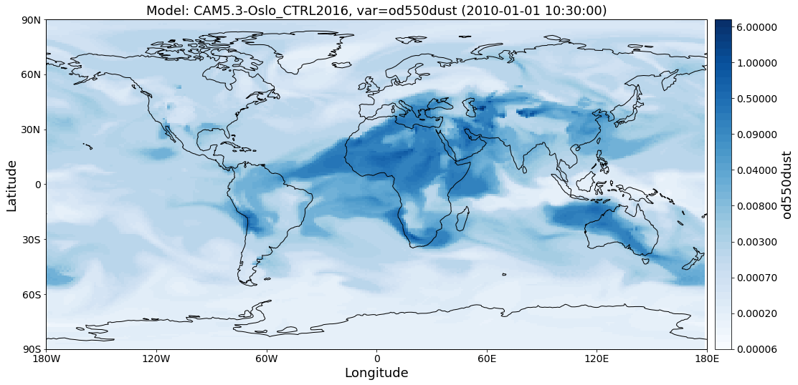
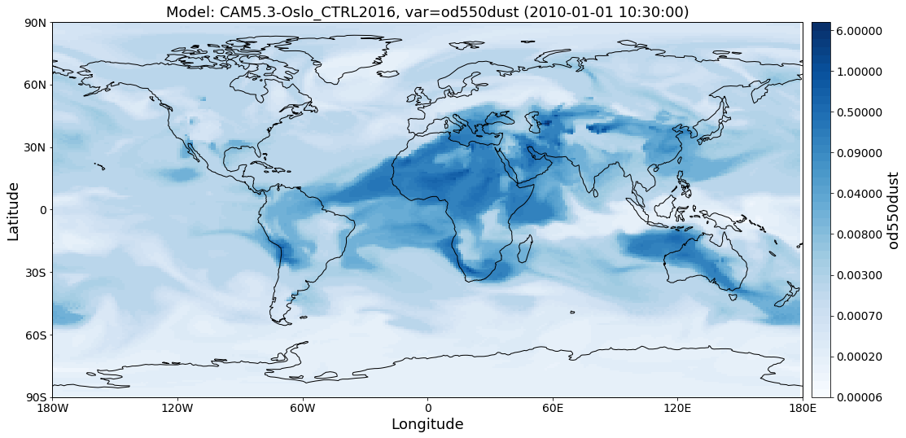

Tutorials (Jupyter Notebooks)¶
In this section you can find example tutorial notebooks for Pyaerocom.
Note
Under development
Getting started¶
This notebook gives an introduction on how to install pyaerocom and run it on your local machine.
Requirements¶
Before installation please make sure you have all required dependencies installed (see here for a list of dependencies).
Installation¶
Please download and unzip the pyaerocom GitHub repository or clone it using
$ git clone https://github.com/metno/pyaerocom.git
into a local directory of your choice. Then, navigate into the pyaerocom root directory where the setup.py file is located. Use
$ python setup.py install
to install the package normally or use
$ python setup.py develop
to install the package in development mode. The latter leaves the code
editable and while install installs and freezes the current version
of the code in your Python environment (see
here
or
here
for more info).
If everything worked out as expected, you should be able to import pyaerocom from within a Python3 console.
import pyaerocom as pya
print("Installation base directory: %s" %pya.__dir__)
print("Version: %s" %pya.__version__)
Installation base directory: /home/jonasg/github/pyaerocom/pyaerocom
Version: 0.0.1.dev1
Setting global environment variables¶
The import of data from the AEROCOM database in pyaerocom is controlled
via an instance of the Config class.
print("Current config: %s" %pya.const.short_str())
Current config:
Pyaerocom Config
----------------
VERBOSE: True
MIN_YEAR: 0
MAX_YEAR: 3000
GRID_IO:
Pyaerocom GridIO
----------------
FILE_TYPE: .nc
TS_TYPES: ['hourly', '3hourly', 'daily', 'monthly']
DEL_TIME_BOUNDS: True
SHIFT_LONS: True
CHECK_TIME_FILENAME: True
EQUALISE_METADATA: True
USE_RENAMED_DIR: True
USE_FILECONVENTION: True
INCLUDE_SUBDIRS: False
GCOSPERCENTCRIT: 0.1
GCOSABSCRIT: 0.04
OBSNET_NONE: NONE
NOMODELNAME: OBSERVATIONS-ONLY
REVISION_FILE: Revision.txt
AERONET_SUN_V2L15_AOD_DAILY_NAME: AeronetSunV2Lev1.5.daily
AERONET_SUN_V2L15_AOD_ALL_POINTS_NAME: AeronetSun_2.0_NRT
AERONET_SUN_V2L2_AOD_DAILY_NAME: AeronetSunV2Lev2.daily
AERONET_SUN_V2L2_AOD_ALL_POINTS_NAME: AeronetSunV2Lev2.AP
AERONET_SUN_V2L2_SDA_DAILY_NAME: AeronetSDAV2Lev2.daily
AERONET_SUN_V2L2_SDA_ALL_POINTS_NAME: AeronetSDAV2Lev2.AP
AERONET_SUN_V3L15_AOD_DAILY_NAME: AeronetSunV3Lev1.5.daily
AERONET_SUN_V3L15_AOD_ALL_POINTS_NAME: AeronetSunV3Lev1.5.AP
AERONET_SUN_V3L2_AOD_DAILY_NAME: AeronetSunV3Lev2.daily
AERONET_SUN_V3L2_AOD_ALL_POINTS_NAME: AeronetSunV3Lev2.AP
AERONET_SUN_V3L15_SDA_DAILY_NAME: AeronetSDAV3Lev1.5.daily
AERONET_SUN_V3L15_SDA_ALL_POINTS_NAME: AeronetSDAV3Lev1.5.AP
AERONET_SUN_V3L2_SDA_DAILY_NAME: AeronetSDAV3Lev2.daily
AERONET_SUN_V3L2_SDA_ALL_POINTS_NAME: AeronetSDAV3Lev2.AP
AERONET_INV_V2L15_DAILY_NAME: AeronetInvV2Lev1.5.daily
AERONET_INV_V2L15_ALL_POINTS_NAME: AeronetInvV2Lev1.5.AP
AERONET_INV_V2L2_DAILY_NAME: AeronetInvV2Lev2.daily
AERONET_INV_V2L2_ALL_POINTS_NAME: AeronetInvV2Lev2.AP
EBAS_MULTICOLUMN_NAME: EBASMC
EEA_NAME: EEAAQeRep
EARLINET_NAME: EARLINET
OBSCONFIG (dict)
MODELDIRS (list)
[/lustre/storeA/project/aerocom/aerocom-users-database/ECMWF/
/lustre/storeA/project/aerocom/aerocom1/
...
/lustre/storeA/project/aerocom/aerocom-users-database/AEROCOM-PHASE-II-IND3/
/lustre/storeA/project/aerocom/aerocom-users-database/AEROCOM-PHASE-II-IND2/]
MODELBASEDIR: /lustre/storeA/project/aerocom/
OBSBASEDIR: /lustre/storeA/project/aerocom/
OBSDATACACHEDIR: /home/jonasg/pyaerocom/_cache
OUT_BASEDIR: /home/jonasg/pyaerocom
_config_ini: /home/jonasg/github/pyaerocom/pyaerocom/data/paths.ini
DONOTCACHEFILE: /home/jonasg/pyaerocom/_cache/DONOTCACHE
PLOT_DIR: /home/jonasg/pyaerocom/plots
VAR_PARAM (dict)
You can check if the relevant base directories MODELBASEDIR and
OBSBASEDIR are valid.
print("All paths valid? %s" %pya.const.READY)
All paths valid? True
If you work on your local machine and use the external AEROCOM user server, you might need to change the path settings. Now you have several options to do this:
- Change all relevant paths directly in the paths.ini file of your installation.
- Create a new config file <myconfig.ini> and iniate your configuration
in your Python console by calling
pyaerocom.config = pyaerocom.Config(config_file=<myconfig.ini>) - Change the settings directly within the instance of the
Configclass, as follows:
cfg = pya.const
cfg.MODELBASEDIR="path/that/does/not/exist"
cfg.OBSBASEDIR="path/that/does/not/exist"
print("All paths valid? %s" %cfg.READY)
All paths valid? False
See what’s currently in there.
print("Current config: {}".format(pya.const.short_str()))
Current config:
Pyaerocom Config
----------------
VERBOSE: True
MIN_YEAR: 0
MAX_YEAR: 3000
GRID_IO:
Pyaerocom GridIO
----------------
FILE_TYPE: .nc
TS_TYPES: ['hourly', '3hourly', 'daily', 'monthly']
DEL_TIME_BOUNDS: True
SHIFT_LONS: True
CHECK_TIME_FILENAME: True
EQUALISE_METADATA: True
USE_RENAMED_DIR: True
USE_FILECONVENTION: True
INCLUDE_SUBDIRS: False
GCOSPERCENTCRIT: 0.1
GCOSABSCRIT: 0.04
OBSNET_NONE: NONE
NOMODELNAME: OBSERVATIONS-ONLY
REVISION_FILE: Revision.txt
AERONET_SUN_V2L15_AOD_DAILY_NAME: AeronetSunV2Lev1.5.daily
AERONET_SUN_V2L15_AOD_ALL_POINTS_NAME: AeronetSun_2.0_NRT
AERONET_SUN_V2L2_AOD_DAILY_NAME: AeronetSunV2Lev2.daily
AERONET_SUN_V2L2_AOD_ALL_POINTS_NAME: AeronetSunV2Lev2.AP
AERONET_SUN_V2L2_SDA_DAILY_NAME: AeronetSDAV2Lev2.daily
AERONET_SUN_V2L2_SDA_ALL_POINTS_NAME: AeronetSDAV2Lev2.AP
AERONET_SUN_V3L15_AOD_DAILY_NAME: AeronetSunV3Lev1.5.daily
AERONET_SUN_V3L15_AOD_ALL_POINTS_NAME: AeronetSunV3Lev1.5.AP
AERONET_SUN_V3L2_AOD_DAILY_NAME: AeronetSunV3Lev2.daily
AERONET_SUN_V3L2_AOD_ALL_POINTS_NAME: AeronetSunV3Lev2.AP
AERONET_SUN_V3L15_SDA_DAILY_NAME: AeronetSDAV3Lev1.5.daily
AERONET_SUN_V3L15_SDA_ALL_POINTS_NAME: AeronetSDAV3Lev1.5.AP
AERONET_SUN_V3L2_SDA_DAILY_NAME: AeronetSDAV3Lev2.daily
AERONET_SUN_V3L2_SDA_ALL_POINTS_NAME: AeronetSDAV3Lev2.AP
AERONET_INV_V2L15_DAILY_NAME: AeronetInvV2Lev1.5.daily
AERONET_INV_V2L15_ALL_POINTS_NAME: AeronetInvV2Lev1.5.AP
AERONET_INV_V2L2_DAILY_NAME: AeronetInvV2Lev2.daily
AERONET_INV_V2L2_ALL_POINTS_NAME: AeronetInvV2Lev2.AP
EBAS_MULTICOLUMN_NAME: EBASMC
EEA_NAME: EEAAQeRep
EARLINET_NAME: EARLINET
OBSCONFIG (dict)
MODELDIRS (list)
[/lustre/storeA/project/aerocom/aerocom-users-database/ECMWF/
/lustre/storeA/project/aerocom/aerocom1/
...
/lustre/storeA/project/aerocom/aerocom-users-database/AEROCOM-PHASE-II-IND3/
/lustre/storeA/project/aerocom/aerocom-users-database/AEROCOM-PHASE-II-IND2/]
MODELBASEDIR: path/that/does/not/exist
OBSBASEDIR: path/that/does/not/exist
OBSDATACACHEDIR: /home/jonasg/pyaerocom/_cache
OUT_BASEDIR: /home/jonasg/pyaerocom
_config_ini: /home/jonasg/github/pyaerocom/pyaerocom/data/paths.ini
DONOTCACHEFILE: /home/jonasg/pyaerocom/_cache/DONOTCACHE
PLOT_DIR: /home/jonasg/pyaerocom/plots
VAR_PARAM (dict)
As you can see, MODELBASEDIR and OBSBASEDIR contain the invalid
paths, but e.g. the list containing model directories (MODELDIRS)
still has the original settings. This is because, these are written in
the method load_config(config_file) or the wrapper method
reload() which does the same. Now reload the config_file and print.
cfg.reload()
print("Current config: {}".format(pya.const.short_str()))
Current config:
Pyaerocom Config
----------------
VERBOSE: True
MIN_YEAR: 0
MAX_YEAR: 3000
GRID_IO:
Pyaerocom GridIO
----------------
FILE_TYPE: .nc
TS_TYPES: ['hourly', '3hourly', 'daily', 'monthly']
DEL_TIME_BOUNDS: True
SHIFT_LONS: True
CHECK_TIME_FILENAME: True
EQUALISE_METADATA: True
USE_RENAMED_DIR: True
USE_FILECONVENTION: True
INCLUDE_SUBDIRS: False
GCOSPERCENTCRIT: 0.1
GCOSABSCRIT: 0.04
OBSNET_NONE: NONE
NOMODELNAME: OBSERVATIONS-ONLY
REVISION_FILE: Revision.txt
AERONET_SUN_V2L15_AOD_DAILY_NAME: AeronetSunV2Lev1.5.daily
AERONET_SUN_V2L15_AOD_ALL_POINTS_NAME: AeronetSun_2.0_NRT
AERONET_SUN_V2L2_AOD_DAILY_NAME: AeronetSunV2Lev2.daily
AERONET_SUN_V2L2_AOD_ALL_POINTS_NAME: AeronetSunV2Lev2.AP
AERONET_SUN_V2L2_SDA_DAILY_NAME: AeronetSDAV2Lev2.daily
AERONET_SUN_V2L2_SDA_ALL_POINTS_NAME: AeronetSDAV2Lev2.AP
AERONET_SUN_V3L15_AOD_DAILY_NAME: AeronetSunV3Lev1.5.daily
AERONET_SUN_V3L15_AOD_ALL_POINTS_NAME: AeronetSunV3Lev1.5.AP
AERONET_SUN_V3L2_AOD_DAILY_NAME: AeronetSunV3Lev2.daily
AERONET_SUN_V3L2_AOD_ALL_POINTS_NAME: AeronetSunV3Lev2.AP
AERONET_SUN_V3L15_SDA_DAILY_NAME: AeronetSDAV3Lev1.5.daily
AERONET_SUN_V3L15_SDA_ALL_POINTS_NAME: AeronetSDAV3Lev1.5.AP
AERONET_SUN_V3L2_SDA_DAILY_NAME: AeronetSDAV3Lev2.daily
AERONET_SUN_V3L2_SDA_ALL_POINTS_NAME: AeronetSDAV3Lev2.AP
AERONET_INV_V2L15_DAILY_NAME: AeronetInvV2Lev1.5.daily
AERONET_INV_V2L15_ALL_POINTS_NAME: AeronetInvV2Lev1.5.AP
AERONET_INV_V2L2_DAILY_NAME: AeronetInvV2Lev2.daily
AERONET_INV_V2L2_ALL_POINTS_NAME: AeronetInvV2Lev2.AP
EBAS_MULTICOLUMN_NAME: EBASMC
EEA_NAME: EEAAQeRep
EARLINET_NAME: EARLINET
OBSCONFIG (dict)
MODELDIRS (list)
[/lustre/storeA/project/aerocom/aerocom-users-database/ECMWF/
/lustre/storeA/project/aerocom/aerocom1/
...
/lustre/storeA/project/aerocom/aerocom-users-database/AEROCOM-PHASE-II-IND3/
/lustre/storeA/project/aerocom/aerocom-users-database/AEROCOM-PHASE-II-IND2/]
MODELBASEDIR: /lustre/storeA/project/aerocom/
OBSBASEDIR: /lustre/storeA/project/aerocom/
OBSDATACACHEDIR: /home/jonasg/pyaerocom/_cache
OUT_BASEDIR: /home/jonasg/pyaerocom
_config_ini: /home/jonasg/github/pyaerocom/pyaerocom/data/paths.ini
DONOTCACHEFILE: /home/jonasg/pyaerocom/_cache/DONOTCACHE
PLOT_DIR: /home/jonasg/pyaerocom/plots
VAR_PARAM (dict)
The reload (and load_config) method actually checks if the
currently defined base directories exist, and if not, it uses the ones
that are defined in the
paths.ini
file. This is the why the above configuration is the intial one. If you
choose valid paths, this should work.
cfg = pya.const
cfg.MODELBASEDIR="."
cfg.OBSBASEDIR="."
print("All paths valid? %s" %cfg.READY)
cfg.reload()
print("Current config: %s" %cfg.short_str())
All paths valid? True
Current config:
Pyaerocom Config
----------------
VERBOSE: True
MIN_YEAR: 0
MAX_YEAR: 3000
GRID_IO:
Pyaerocom GridIO
----------------
FILE_TYPE: .nc
TS_TYPES: ['hourly', '3hourly', 'daily', 'monthly']
DEL_TIME_BOUNDS: True
SHIFT_LONS: True
CHECK_TIME_FILENAME: True
EQUALISE_METADATA: True
USE_RENAMED_DIR: True
USE_FILECONVENTION: True
INCLUDE_SUBDIRS: False
GCOSPERCENTCRIT: 0.1
GCOSABSCRIT: 0.04
OBSNET_NONE: NONE
NOMODELNAME: OBSERVATIONS-ONLY
REVISION_FILE: Revision.txt
AERONET_SUN_V2L15_AOD_DAILY_NAME: AeronetSunV2Lev1.5.daily
AERONET_SUN_V2L15_AOD_ALL_POINTS_NAME: AeronetSun_2.0_NRT
AERONET_SUN_V2L2_AOD_DAILY_NAME: AeronetSunV2Lev2.daily
AERONET_SUN_V2L2_AOD_ALL_POINTS_NAME: AeronetSunV2Lev2.AP
AERONET_SUN_V2L2_SDA_DAILY_NAME: AeronetSDAV2Lev2.daily
AERONET_SUN_V2L2_SDA_ALL_POINTS_NAME: AeronetSDAV2Lev2.AP
AERONET_SUN_V3L15_AOD_DAILY_NAME: AeronetSunV3Lev1.5.daily
AERONET_SUN_V3L15_AOD_ALL_POINTS_NAME: AeronetSunV3Lev1.5.AP
AERONET_SUN_V3L2_AOD_DAILY_NAME: AeronetSunV3Lev2.daily
AERONET_SUN_V3L2_AOD_ALL_POINTS_NAME: AeronetSunV3Lev2.AP
AERONET_SUN_V3L15_SDA_DAILY_NAME: AeronetSDAV3Lev1.5.daily
AERONET_SUN_V3L15_SDA_ALL_POINTS_NAME: AeronetSDAV3Lev1.5.AP
AERONET_SUN_V3L2_SDA_DAILY_NAME: AeronetSDAV3Lev2.daily
AERONET_SUN_V3L2_SDA_ALL_POINTS_NAME: AeronetSDAV3Lev2.AP
AERONET_INV_V2L15_DAILY_NAME: AeronetInvV2Lev1.5.daily
AERONET_INV_V2L15_ALL_POINTS_NAME: AeronetInvV2Lev1.5.AP
AERONET_INV_V2L2_DAILY_NAME: AeronetInvV2Lev2.daily
AERONET_INV_V2L2_ALL_POINTS_NAME: AeronetInvV2Lev2.AP
EBAS_MULTICOLUMN_NAME: EBASMC
EEA_NAME: EEAAQeRep
EARLINET_NAME: EARLINET
OBSCONFIG (dict)
MODELDIRS (list)
[.aerocom-users-database/ECMWF/
.aerocom1/
...
.aerocom-users-database/AEROCOM-PHASE-II-IND3/
.aerocom-users-database/AEROCOM-PHASE-II-IND2/]
MODELBASEDIR: .
OBSBASEDIR: .
OBSDATACACHEDIR: /home/jonasg/pyaerocom/_cache
OUT_BASEDIR: /home/jonasg/pyaerocom
_config_ini: /home/jonasg/github/pyaerocom/pyaerocom/data/paths.ini
DONOTCACHEFILE: /home/jonasg/pyaerocom/_cache/DONOTCACHE
PLOT_DIR: /home/jonasg/pyaerocom/plots
VAR_PARAM (dict)
This is it! Note, however, that we just inserted the current directory which is not where the data actually is. Thus, before continuing, we have to reload the config as it was at the beginning:
cfg.reload(keep_basedirs=False)
print(cfg.short_str())
Pyaerocom Config
----------------
VERBOSE: True
MIN_YEAR: 0
MAX_YEAR: 3000
GRID_IO:
Pyaerocom GridIO
----------------
FILE_TYPE: .nc
TS_TYPES: ['hourly', '3hourly', 'daily', 'monthly']
DEL_TIME_BOUNDS: True
SHIFT_LONS: True
CHECK_TIME_FILENAME: True
EQUALISE_METADATA: True
USE_RENAMED_DIR: True
USE_FILECONVENTION: True
INCLUDE_SUBDIRS: False
GCOSPERCENTCRIT: 0.1
GCOSABSCRIT: 0.04
OBSNET_NONE: NONE
NOMODELNAME: OBSERVATIONS-ONLY
REVISION_FILE: Revision.txt
AERONET_SUN_V2L15_AOD_DAILY_NAME: AeronetSunV2Lev1.5.daily
AERONET_SUN_V2L15_AOD_ALL_POINTS_NAME: AeronetSun_2.0_NRT
AERONET_SUN_V2L2_AOD_DAILY_NAME: AeronetSunV2Lev2.daily
AERONET_SUN_V2L2_AOD_ALL_POINTS_NAME: AeronetSunV2Lev2.AP
AERONET_SUN_V2L2_SDA_DAILY_NAME: AeronetSDAV2Lev2.daily
AERONET_SUN_V2L2_SDA_ALL_POINTS_NAME: AeronetSDAV2Lev2.AP
AERONET_SUN_V3L15_AOD_DAILY_NAME: AeronetSunV3Lev1.5.daily
AERONET_SUN_V3L15_AOD_ALL_POINTS_NAME: AeronetSunV3Lev1.5.AP
AERONET_SUN_V3L2_AOD_DAILY_NAME: AeronetSunV3Lev2.daily
AERONET_SUN_V3L2_AOD_ALL_POINTS_NAME: AeronetSunV3Lev2.AP
AERONET_SUN_V3L15_SDA_DAILY_NAME: AeronetSDAV3Lev1.5.daily
AERONET_SUN_V3L15_SDA_ALL_POINTS_NAME: AeronetSDAV3Lev1.5.AP
AERONET_SUN_V3L2_SDA_DAILY_NAME: AeronetSDAV3Lev2.daily
AERONET_SUN_V3L2_SDA_ALL_POINTS_NAME: AeronetSDAV3Lev2.AP
AERONET_INV_V2L15_DAILY_NAME: AeronetInvV2Lev1.5.daily
AERONET_INV_V2L15_ALL_POINTS_NAME: AeronetInvV2Lev1.5.AP
AERONET_INV_V2L2_DAILY_NAME: AeronetInvV2Lev2.daily
AERONET_INV_V2L2_ALL_POINTS_NAME: AeronetInvV2Lev2.AP
EBAS_MULTICOLUMN_NAME: EBASMC
EEA_NAME: EEAAQeRep
EARLINET_NAME: EARLINET
OBSCONFIG (dict)
MODELDIRS (list)
[/lustre/storeA/project/aerocom/aerocom-users-database/ECMWF/
/lustre/storeA/project/aerocom/aerocom1/
...
/lustre/storeA/project/aerocom/aerocom-users-database/AEROCOM-PHASE-II-IND3/
/lustre/storeA/project/aerocom/aerocom-users-database/AEROCOM-PHASE-II-IND2/]
MODELBASEDIR: /lustre/storeA/project/aerocom/
OBSBASEDIR: /lustre/storeA/project/aerocom/
OBSDATACACHEDIR: /home/jonasg/pyaerocom/_cache
OUT_BASEDIR: /home/jonasg/pyaerocom
_config_ini: /home/jonasg/github/pyaerocom/pyaerocom/data/paths.ini
DONOTCACHEFILE: /home/jonasg/pyaerocom/_cache/DONOTCACHE
PLOT_DIR: /home/jonasg/pyaerocom/plots
VAR_PARAM (dict)
Now with everything being set up correctly, we can start analysing the data. The following tutorials focus on the reading, plotting and analysis of model data. Tutorials for observational data will follow soon, as well as tutorials that show how to merge and compare model with observational data. Before you can work with the data, you may want to find out what data is available. The following section shows how to do this.
Finding data directories of model or observation data¶
Let’s presume you want to access data from a certain model or observation and you want to check if it is available. Let’s assume you are interested in data from a control run (CTRL) of the CAM Oslo model but you do not know the exact model version or run ID. Then, you can browse existing data directories using a wildcard search, simply by (we put it in a try/except block, since with wildcard browse it will not find a unique ID and thus raise an Exception):
try:
pya.search_data_dir_aerocom("CAM*CTRL*")
except OSError as e:
print(repr(e))
OSError("No unique match found for ID ot pattern CAM*CTRL*. Found multiple matches. Please choose from the following list: ['CAMS_REANCTRL', 'CAMS_REANCTRL', 'CAM5-Oslo_FAMIPWARMCnudge-emi2000.A2.CTRL', 'CAM4-Oslo_Vprelim.A2.CTRL', 'CAM5-MAM3-PNNL.A2.CTRL', 'CAM4-Oslo-Vcmip5online.A2.CTRL', 'CAM4-Oslo-Vcmip5.A2.CTRL', 'CAM4-Oslo-Vcmip5emi2000.A2.CTRL', 'CAM5.1-MAM3-PNNL.A2.CTRL', 'CAM3.A2.CTRL', 'CAM4-Oslo.A2.CTRL', 'BCC_AGCM2.0.1_CAM.A2.CTRL', 'ECMWF-IFS-CY42R1-CAMS-RA-CTRL_AP3-CTRL2016-PD', 'ECMWF-IFS-CY43R1-CAMS-NITRATE-DEV_AP3-CTRL2016-PD', 'CAM5.4_CTRL2016', 'CAM5_CTRL2016', 'CAM5.3-Oslo_CTRL2016', 'CAM5.3-Oslo_AP3-CTRL2016-PD', 'CAM5.3-Oslo_AP3-CTRL2016-PI']",)
Reading the aerosol optical detph at 550nm using a specified model ID¶
The resulting list shows possible options that were found in the database. Let’s choose the CAM5.3-Oslo_CTRL2016 run and import the data. In the following cell, we directly instantiate a read class for data import since we know the model and run ID from the previous cell (the read class basically includes the above used search method.
read = pya.io.ReadGridded("CAM5.3-Oslo_CTRL2016")
Found match for ID CAM5.3-Oslo_CTRL2016
Checking if renamed directory exists
Found directory /lustre/storeA/project/aerocom/aerocom-users-database/AEROCOM-PHASE-III/CAM5.3-Oslo_CTRL2016/renamed
Okay, let’s see what is in there.
print(read)
Pyaerocom ReadGridded
---------------------
Model ID: CAM5.3-Oslo_CTRL2016
Available variables: ['abs550aer', 'deltaz3d', 'humidity3d', 'od440aer', 'od550aer', 'od550aer3d', 'od550aerh2o', 'od550dryaer', 'od550dust', 'od550lt1aer', 'od870aer']
Available years: [2006, 2008, 2010]
Let’s load results for the aerosol optical depth (od550aer) for march 2010. The read function take a string or a list of strings as input for specifying one or more variables that are supposed to be read. Thus, the return type of this method is always a tuple, even if we only provide one variable (as in the following example) and as a result, the loaded data object has to be accessed using the first index of the tuple.
data = read.read("od550aer", start_time="1 march 2010", stop_time="31 march 2010")[0]
FOUND MATCH: aerocom3_CAM5.3-Oslo_CTRL2016_od550aer_Column_2010_daily.nc
Rolling longitudes to -180 -> 180 definition
Applying temporal cropping of result cube
Cropping along time axis based on Timestamps
Accessing the data and plotting a map¶
The loaded data is of type GriddedData and can now be used for further analysis. It’s string representation contains a useful summary of what is in there.
print(data)
pyaerocom.GriddedData: CAM5.3-Oslo_CTRL2016
Grid data: Aerosol optical depth at 550nm / (1) (time: 31; latitude: 192; longitude: 288)
Dimension coordinates:
time x - -
latitude - x -
longitude - - x
Attributes:
CDI: Climate Data Interface version 1.8.2 (http://mpimet.mpg.de/cdi)
CDO: Climate Data Operators version 1.8.2 (http://mpimet.mpg.de/cdo)
Conventions: CF-1.0
NCO: 4.3.7
Version: $Name$
case: optINSITUnRemote
frequency: day
history: Thu Oct 05 12:45:21 2017: cdo daymean ./aerocom3_CAM5.3-Oslo_CTRL2016_od550aer_Column_2010_3hourly.nc...
host: r10i0n0
initial_file: /work/shared/noresm/inputdata/atm/cam/inic/fv/cami-mam3_0000-01-01_0.9...
logname: kirkevag
nco_openmp_thread_number: 1
revision_Id: $Id$
source: CAM
title: UNSET
topography_file: /work/shared/noresm/inputdata/noresm-only/inputForNudging/ERA_f09f09_3...
The data comprises 31 time stamps, as expected, since we picked one month and the dataset is daily. Now, for instance, we can crop the data using a predefined region (e.g. South America) and plot the first day of the dataset.
fig = data.crop(region="SAMERICA").quickplot_map(time_idx=0)

We might also be interested in the weighted area average for the month that we extracted.
weighted_mean = data.area_weighted_mean()
weighted_mean
masked_array(data=[0.13791640320289586, 0.14124750077282458,
0.14026821774460266, 0.13765764062688907,
0.13799386441924807, 0.13356850899504383,
0.1360614300579914, 0.13855871749949283,
0.13865845188822973, 0.1418257387148213,
0.14057638401825043, 0.1383954795505587,
0.1439754144248747, 0.1461116937705798,
0.14848172934485668, 0.1504189577232701,
0.15773716932199822, 0.1669795588240825,
0.17558162125906104, 0.17707022826867758,
0.17843404416301747, 0.18309553886295593,
0.17637980641255796, 0.16969895404314983,
0.16454942855787366, 0.16468216159671398,
0.1701799164857099, 0.17152435759051723,
0.17110234928683343, 0.16790393840056056,
0.1654223999902774],
mask=[False, False, False, False, False, False, False, False,
False, False, False, False, False, False, False, False,
False, False, False, False, False, False, False, False,
False, False, False, False, False, False, False],
fill_value=1e+20)
import pandas as pd
pd.Series(weighted_mean, data.time_stamps()).plot()
<matplotlib.axes._subplots.AxesSubplot at 0x7f189525b8d0>

The following notebook introduces in more detail how pyaerocom handles
regions and where they can be defined. In the subsequent tutorial, the
ReadGridded class is introduced, that was usesed above to import
model data in a flexible way based on variable name, time range and
temporal resolution. The loaded data for each model and variable is then
stored in the analysis class GriddedData which we use in the end of
this notebook and which will be introduced in a later tutorial.
AEROCOM default regions¶
This notebook introduces how pya handles information related to default regions (e.g. Europe, Asia, …) as used in the AEROCOM interface. All default regions are defined in the file regions.ini.
import pyaerocom as pya
print(pya.region.get_all_default_region_ids())
['WORLD', 'EUROPE', 'ASIA', 'AUSTRALIA', 'CHINA', 'INDIA', 'NAFRICA', 'SAFRICA', 'SAMERICA', 'NAMERICA']
Now load some default regions and print them.
europe = pya.Region("EUROPE")
asia = pya.Region("ASIA")
print(europe)
print()
print(asia)
pyaeorocom Region
Name: EUROPE
Longitude range: [-20, 70]
Latitude range: [30, 80]
Longitude range (plots): [-20, 70]
Latitude range (plots): [30, 80]
pyaeorocom Region
Name: ASIA
Longitude range: [40, 150]
Latitude range: [0, 60]
Longitude range (plots): [40, 150]
Latitude range (plots): [0, 60]
Load example data and apply region specific crop¶
In the following cell, we create an instance of the GriddedData
class (hich is introduced in more detail in a later tutorial), load some
test data (from the CAMS ECMWF OSUITE dataset), crop it and plot a map
of the results over Europe.
data = pya.GriddedData()
data._init_testdata_default()
crop = data.crop(region="EUROPE")
fig = crop.quickplot_map()
Rolling longitudes to -180 -> 180 definition

Reading model data: the ReadGridded class¶
This notebook introduces the ReadGridded class of pyaerocom, a flexible interface for importing model results from a single model, based on variable name (e.g. od550aer, od550bc), start / stop time stamps and temporal resolution (e.g. hourly, 3hourly, daily, monthly).
The class is part of the readgridded module of pyaerocom, as well as the class ReadGriddedMulti.
In the following cells, we create an instance of the the ReadGridded
class and use this object to find and import data files containing the
aerosol optical depth at 550 nm (od550aer) from the ECMWF CAMS
reanalysis model (ECMWF_CAMS_REAN) for the years 2003-2007 in daily
resolution. The files will be temporally merged and put into an instance
of the GriddedData class.
We start with creating a reading object, that will take care of finding
the model directory for us (based on the model ID) and all valid NetCDF
files on initialisation. Use the print commant to preview the string
representation of ReadGridded object, which provides useful
information about what is in there.
import pyaerocom as pya
read = pya.io.ReadGridded(name="ECMWF_CAMS_REAN",
start_time="1-1-2003",
stop_time="31-12-2007",
verbose=False)
print(read)
Pyaerocom ReadGridded
---------------------
Model ID: ECMWF_CAMS_REAN
Available variables: ['ang4487aer', 'od440aer', 'od550aer', 'od550bc', 'od550dust', 'od550oa', 'od550so4', 'od550ss', 'od865aer']
Available years: [2003, 2004, 2005, 2006, 2007, 2008, 2009, 2010, 2011, 2012, 2013, 2014, 2015, 2016, 9999]
The output contains information about all variables that were found and all corresponding years. These information is extracted from the filenames, which have to follow the AEROCOM file naming conventions.
Please note that at this point, no data is actually imported but
only the paths are set that contain data for this model. In order to
read one variable, call the read_var function with a valid variable
name. You can check available variables using the vars attribute (or
by printing the string representation, as shown in the cell above).
print("Detected variables for model %s:\n %s" %(read.name, read.vars))
Detected variables for model ECMWF_CAMS_REAN:
['ang4487aer', 'od440aer', 'od550aer', 'od550bc', 'od550dust', 'od550oa', 'od550so4', 'od550ss', 'od865aer']
data = read.read_var(var_name="od550aer", ts_type="daily")
data
pyaerocom.GriddedData
Grid data: <iris 'Cube' of Aerosol optical depth at 550 nm / (1) (time: 1826; latitude: 161; longitude: 320)>
The returned data object is of type
GriddedData
class, which will be introduced in more detail later. This data object
is returned by the read_var method and can also be accessed from the
instance of the reading class using:
d = read.data["od550aer"]
d is data #?
True
We may also import other variables using either the above used method
read_var or the more general read method which can read single
or multiple variables on the run.
read.read(['od550bc', 'od550dust', 'od550oa', 'od550so4'])
(pyaerocom.GriddedData
Grid data: <iris 'Cube' of Aerosol optical depth at 550 nm / (1) (time: 1826; latitude: 161; longitude: 320)>,
pyaerocom.GriddedData
Grid data: <iris 'Cube' of Aerosol optical depth at 550 nm / (1) (time: 1826; latitude: 161; longitude: 320)>,
pyaerocom.GriddedData
Grid data: <iris 'Cube' of Aerosol optical depth at 550 nm / (1) (time: 1826; latitude: 161; longitude: 320)>,
pyaerocom.GriddedData
Grid data: <iris 'Cube' of Aerosol optical depth at 550 nm / (1) (time: 1826; latitude: 161; longitude: 320)>)
Now let’s double check if all variables have been imported.
print(read)
Pyaerocom ReadGridded
---------------------
Model ID: ECMWF_CAMS_REAN
Available variables: ['od550bc', 'od550dust', 'od550oa', 'od550so4']
Available years: [2003, 2004, 2005, 2006, 2007, 2008, 2009, 2010, 2011, 2012, 2013, 2014, 2015, 2016, 9999]
Loaded GriddedData objects:
Pyaerocom GriddedData
---------------------
Variable: od550aer
Temporal resolution: daily
Start / Stop: 2003-01-01T00:00:00.000000 - 2007-12-31T00:00:00.000000
Pyaerocom GriddedData
---------------------
Variable: od550bc
Temporal resolution: daily
Start / Stop: 2003-01-01T00:00:00.000000 - 2007-12-31T00:00:00.000000
Pyaerocom GriddedData
---------------------
Variable: od550dust
Temporal resolution: daily
Start / Stop: 2003-01-01T00:00:00.000000 - 2007-12-31T00:00:00.000000
Pyaerocom GriddedData
---------------------
Variable: od550oa
Temporal resolution: daily
Start / Stop: 2003-01-01T00:00:00.000000 - 2007-12-31T00:00:00.000000
Pyaerocom GriddedData
---------------------
Variable: od550so4
Temporal resolution: daily
Start / Stop: 2003-01-01T00:00:00.000000 - 2007-12-31T00:00:00.000000
In the following we continue with the od550aer data object that was
loaded first and that was assigned the name data above.
print("\nThe data object is of type %s and contains %d time stamps" %(type(data), data.shape[0]))
The data object is of type <class 'pyaerocom.griddeddata.GriddedData'> and contains 1826 time stamps
The returned GriddedData object contains 1826 time stamps. Given that the defined period of 5 years includes one leap year, we should expect that we imported data for each day of the five years?
print(1826 == 5*365+1)
True
Remark on time definition¶
If you run this notebook with verbose=True in the reading object,
you will receive the output
Error message: AttributeError('Cube does not contain time dimension',) Invalid time axis in file ECMWF_CAMS_REAN.daily.od550aer.2007.nc. Attempting to correct.
several times when reading the data. This warning indicates, that the corresponding data in the netCDF files has some issue with the time dimension. Here, the time variable is not properly defined in the NetCDF file. Pyaerocom can correct for this on data import by
- First checking if the time dimension in the NetCDF file is correct according to CF convention (see here for details on the implementation and if a problem is detected, then …
- the time axis is redefined based on the year and time resolution (ts_type) that is encrypted in the filename. The latter requires that the file follows one of the pyaerocom file conventions.
A very brief introduction into the GriddedData class¶
Now as a final step, we briefly introduce some of the features of the
GriddedData class by computing and plotting a time series of the
global weighted average aerosol optical density as well as the same time
series at the coordinates in the city of Leipzig, Germany.
from pandas import Series
from scipy.ndimage import gaussian_filter1d
#compute global mean (area weighted)
glob_mean = data.area_weighted_mean()
#extract AODs at the position of Leipzig
lon_leipzig = 12.44
lat_leipzig = 51.35
data_leipzig = data.interpolate([("latitude", lat_leipzig),
("longitude", lon_leipzig)])
# create pandas Series for global average
s_glob = Series(glob_mean, index=data.time_stamps())
# create pandas Series for leipzig average (and smooth in time)
GAUSS_SIGMA = 3
s_leipzig = Series(gaussian_filter1d(data_leipzig.grid.data, GAUSS_SIGMA),
data_leipzig.time_stamps())
ax = s_leipzig.plot(label=r"City of Leipzig (smoothed $\sigma$=%d)" %GAUSS_SIGMA, figsize=(14,5))
s_glob.plot(label="Global trend", ax=ax)
ax.legend()
tit = ax.set_title("AOD @ 550nm")

In the following section, the ReadGriddedMulti class is introduced,
which is largely based on the ReadGridded class and allows for
importing data from multiple models.
Reading data from multiple models: the ReadGriddedMulti class¶
The pyaerocom.ReadGriddedMulti class provides an interface to import
multiple variables for an arbitrary number of gridded datasets
(e.g. model data, level 2 satellite data) and within a specific time
interval. It makes large use of the ReadGridded class that provides
an interface for importing results from a single dataset.
import os
import pyaerocom as pya
Define two models (this list can contain as many models as you like)
models = ["AATSR_SU_v4.3", "CAM5.3-Oslo_CTRL2016"]
Again, if you are not sure what is the exact name of the dataset you are searching for, you may use wildcards to search for options. For instance, if you want to include results from the implementation of the sectional aerosol microphysics module (SALSA) in the ECHAM5-HAM aerosol-climate model, you may search if data exists …
try:
pya.search_data_dir_aerocom("*ECHAM*salsa*CTRL*2015")
except Exception as e:
print(repr(e))
Found exactly one match for search pattern *ECHAM*salsa*CTRL*2015: ECHAM6-SALSA_AP3-CTRL2015
… and include it:
models.append('ECHAM6-SALSA_AP3-CTRL2015')
Now create and initiate ReadGriddedMulti class. The directory for
each model as well as all valid files in the model directories are
searched on initiation of the instance. Valid here means, that the files
belong to the corresponding model. Subsetting of the time interval is
done in a later process.
read = pya.io.ReadGriddedMulti(models, '2010','2011', verbose=False)
print(read)
Pyaerocom ReadGriddedMulti
--------------------------
Model IDs: ['AATSR_SU_v4.3', 'CAM5.3-Oslo_CTRL2016', 'ECHAM6-SALSA_AP3-CTRL2015']
Loaded data:
Pyaerocom ReadGridded
---------------------
Model ID: AATSR_SU_v4.3
Available variables: ['abs550aer', 'ang4487aer', 'od550aer', 'od550dust', 'od550erraer', 'od550gt1aer', 'od550lt1aer']
Available years: [2002, 2003, 2004, 2005, 2006, 2007, 2008, 2009, 2010, 2011, 2012]
Pyaerocom ReadGridded
---------------------
Model ID: CAM5.3-Oslo_CTRL2016
Available variables: ['abs550aer', 'deltaz3d', 'humidity3d', 'od440aer', 'od550aer', 'od550aer3d', 'od550aerh2o', 'od550dryaer', 'od550dust', 'od550lt1aer', 'od870aer']
Available years: [2006, 2008, 2010]
Pyaerocom ReadGridded
---------------------
Model ID: ECHAM6-SALSA_AP3-CTRL2015
Available variables: ['depbc', 'depdust', 'depoa', 'depso4', 'depss', 'emibc', 'emidms', 'emidust', 'emiso2', 'emiso4', 'emiss', 'emivoc', 'emivoct', 'loadbc', 'loaddust', 'loadoa', 'loadso4', 'loadss', 'od550aer', 'od550bc', 'od550dust', 'od550oa', 'od550so4', 'od550ss', 'sconcbc', 'sconcdust', 'sconcoa', 'sconcso4', 'sconcss']
Available years: [2010]
As you can see, the 3 different instances of the ReadGridded class
were created (which was introduced in the previous tutorial), one for
each of the 3 requested datasets. These can be used to access the data
for each of the datasets.
Let’s define a bunch of test variables that are supposed to be loaded for each model.
test_vars = ["od550aer", "od550dust"]
Read all variables for all models
result_dict = read.read(test_vars, ts_type="daily")
OSError('No files could be found for dataset ECHAM6-SALSA_AP3-CTRL2015, variable od550aer and daily data in specified time interval 2010-01-01 00:00:00-2011-01-01 00:00:00',)
OSError('No files could be found for dataset ECHAM6-SALSA_AP3-CTRL2015, variable od550dust and daily data in specified time interval 2010-01-01 00:00:00-2011-01-01 00:00:00',)
As we can see, for the ECHAM6 data, the import failed. The reason for this is, that these data only exists in monthly resolution. We can load this data manually.
r = read["ECHAM6-SALSA_AP3-CTRL2015"]
r.vars
r.verbose = True
r.read_var("od550aer", ts_type="monthly")
FOUND MATCH: aerocom3_ECHAM6-SALSA_AP3-CTRL2015_od550aer_Column_2010_monthly.nc
Invalid time dimension.
Error message: ValueError("Time match error, nominal dates for test array[0 1 2 7] (unit=days since 2001-01-01 00:00:00): ['2010-01' '2010-02' '2010-03' '2010-08']nReceived values after conversion: ['2010-01' '2010-03' '2010-04' '2010-09']",)
Invalid time axis in file aerocom3_ECHAM6-SALSA_AP3-CTRL2015_od550aer_Column_2010_monthly.nc. Attempting to correct.
Applying temporal cropping of result cube
Cropping along time axis based on Timestamps
pyaerocom.GriddedData
Grid data: <iris 'Cube' of atmosphere_optical_thickness_due_to_ambient_aerosol_particles / (1) (time: 12; latitude: 96; longitude: 192)>
Print what is in there (similar to the previously introduced
ReadGridded class, also the ReadGriddedMulti class has a helpful
string representation)
print(read)
Pyaerocom ReadGriddedMulti
--------------------------
Model IDs: ['AATSR_SU_v4.3', 'CAM5.3-Oslo_CTRL2016', 'ECHAM6-SALSA_AP3-CTRL2015']
Loaded data:
Pyaerocom ReadGridded
---------------------
Model ID: AATSR_SU_v4.3
Available variables: ['abs550aer', 'ang4487aer', 'od550aer', 'od550dust', 'od550erraer', 'od550gt1aer', 'od550lt1aer']
Available years: [2002, 2003, 2004, 2005, 2006, 2007, 2008, 2009, 2010, 2011, 2012]
Loaded GriddedData objects:
Pyaerocom GriddedData
---------------------
Variable: od550aer
Temporal resolution: daily
Start / Stop: 2010-01-01T00:00:00.000000 - 2011-01-01T00:00:00.000000
Pyaerocom GriddedData
---------------------
Variable: od550dust
Temporal resolution: daily
Start / Stop: 2010-01-01T00:00:00.000000 - 2011-01-01T00:00:00.000000
Pyaerocom ReadGridded
---------------------
Model ID: CAM5.3-Oslo_CTRL2016
Available variables: ['abs550aer', 'deltaz3d', 'humidity3d', 'od440aer', 'od550aer', 'od550aer3d', 'od550aerh2o', 'od550dryaer', 'od550dust', 'od550lt1aer', 'od870aer']
Available years: [2006, 2008, 2010]
Loaded GriddedData objects:
Pyaerocom GriddedData
---------------------
Variable: od550aer
Temporal resolution: daily
Start / Stop: 2010-01-01T00:00:00.000000 - 2010-12-31T00:00:00.000000
Pyaerocom GriddedData
---------------------
Variable: od550dust
Temporal resolution: daily
Start / Stop: 2010-01-01T00:00:00.000000 - 2010-12-31T00:00:00.000000
Pyaerocom ReadGridded
---------------------
Model ID: ECHAM6-SALSA_AP3-CTRL2015
Available variables: ['depbc', 'depdust', 'depoa', 'depso4', 'depss', 'emibc', 'emidms', 'emidust', 'emiso2', 'emiso4', 'emiss', 'emivoc', 'emivoct', 'loadbc', 'loaddust', 'loadoa', 'loadso4', 'loadss', 'od550aer', 'od550bc', 'od550dust', 'od550oa', 'od550so4', 'od550ss', 'sconcbc', 'sconcdust', 'sconcoa', 'sconcso4', 'sconcss']
Available years: [2010]
Loaded GriddedData objects:
Pyaerocom GriddedData
---------------------
Variable: od550aer
Temporal resolution: monthly
Start / Stop: 2010-01-01T00:00:00.000000 - 2010-12-01T00:00:00.000000
Print some information about the different data objects
for name, result in read.results.items():
print("Current model: %s" %name)
for var_name, data in result.data.items():
print("\nCurrent variable: %s" %var_name)
# data is of type pya.GriddedData which uses an extended representation of the Cube class
print(repr(data))
Current model: AATSR_SU_v4.3
Current variable: od550aer
pyaerocom.GriddedData
Grid data: <iris 'Cube' of atmosphere_optical_thickness_due_to_ambient_aerosol / (1) (time: 366; latitude: 180; longitude: 360)>
Current variable: od550dust
pyaerocom.GriddedData
Grid data: <iris 'Cube' of atmosphere_optical_thickness_due_to_ambient_aerosol / (1) (time: 366; latitude: 180; longitude: 360)>
Current model: CAM5.3-Oslo_CTRL2016
Current variable: od550aer
pyaerocom.GriddedData
Grid data: <iris 'Cube' of Aerosol optical depth at 550nm / (1) (time: 365; latitude: 192; longitude: 288)>
Current variable: od550dust
pyaerocom.GriddedData
Grid data: <iris 'Cube' of mineral aerosol optical depth 550nm / (1) (time: 365; latitude: 192; longitude: 288)>
Current model: ECHAM6-SALSA_AP3-CTRL2015
Current variable: od550aer
pyaerocom.GriddedData
Grid data: <iris 'Cube' of atmosphere_optical_thickness_due_to_ambient_aerosol_particles / (1) (time: 12; latitude: 96; longitude: 192)>
Now get and arbitrarily crop the CAM5.3-Oslo_CTRL2016 data object containing the od550aer values and draw a map.
data = read["CAM5.3-Oslo_CTRL2016"]["od550aer"]
print("\nStart / stop before crop: %s - %s\n"
%(data.start_time,
data.stop_time))
dat_crop = data.crop(lon_range=(-30, 30),
lat_range=(0, 45),
time_range=('15 March 2010','22 June 2010'))
print("Start / stop after crop: %s - %s"
%(dat_crop.grid.coord("time").cell(0).point,
dat_crop.grid.coord("time").cell(-1).point))
Start / stop before crop: 2010-01-01T00:00:00.000000 - 2010-12-31T00:00:00.000000
Cropping along time axis based on Timestamps
Start / stop after crop: 2010-03-15 10:30:00 - 2010-06-22 10:30:00
Plot a map of the first day.
fig = dat_crop.quickplot_map()

Iterate over models and variables¶
The following cell iterates over all imported variables and models and plots the first time stamp of each result file.
for name, result in read.results.items():
for var_name, model_data in result.data.items():
fig = model_data.quickplot_map()


 


Introducing the GriddedData class¶
This notebook introduces basic features of the
GriddedData
class of pya. The GriddedData class is the fundamental base class
for the analysis of model data. The underlying data type is
iris.cube.Cube
which was extended, for instance by allowing direct imports of netCDF
files when creating an instance of GriddedData (i.e. by passing the
filename and specifying the variable name on initialisation). This
notebook introduces some of the features of the GriddedData class.
Starting with some imports…
import pyaerocom as pya
Let’s get a test file to load
test_files = pya.io.testfiles.get()
for name, filepath in test_files["models"].items(): print("%s\n%s\n" %(name, filepath))
aatsr_su_v4.3
/lustre/storeA/project/aerocom/aerocom-users-database/CCI-Aerosol/CCI_AEROSOL_Phase2/AATSR_SU_v4.3/renamed/aerocom.AATSR_SU_v4.3.daily.od550aer.2008.nc
ecmwf_osuite
/lustre/storeA/project/aerocom/aerocom1/ECMWF_OSUITE_NRT_test/renamed/aerocom.ECMWF_OSUITE_NRT_test.daily.od550aer.2018.nc
The dictionary, returned by the get() function is categorised into
two subirectories for model based test files (key="models") and for
observation based test files (key=observations). So far, there is
not much in there (i.e. only two files).
Let’s pick out the ECMWF OSUITE test file and load the data directly
into an instance of the GriddedData class. The GriddedData class
takes either preloaded instances of the iris.cube.Cube class as
input, or a valid netCDF file path. The latter requires specification of
the variable name which is then filtered from the data stored in the
netCDF file (which may contain multiple variables. The following example
imports the data for the aerosol optical density at 550 nm. The string
representation of the GriddedData class (see print at end of
following code cell) was slitghtly adapted from the underlying Cube
object.
fpath = test_files["models"]["ecmwf_osuite"]
data = pya.GriddedData(input=fpath, var_name="od550aer", name="ECMWF_OSUITE")
print(data)
Rolling longitudes to -180 -> 180 definition
pyaerocom.GriddedData: ECMWF_OSUITE
Grid data: Dust Aerosol Optical Depth at 550nm / (unknown) (time: 365; latitude: 451; longitude: 900)
Dimension coordinates:
time x - -
latitude - x -
longitude - - x
Attributes:
Conventions: CF-1.0
NCO: 4.7.2
history: Tue Mar 20 13:08:49 2018: ncks -7 -O -o test.nc -x -v time_bnds od550aer.test.orig.nc
Tue...
history_of_appended_files: Tue Mar 20 02:09:15 2018: Appended file /lustre/storeA/project/aerocom/aerocom1/ECMWF_OSUITE_NRT/renamed//aerocom.ECMWF_OSUITE_NRT.daily.od550bc.2018.nc...
invalid_units: ~
nco_openmp_thread_number: 1
Cell methods:
mean: time
Remark on longitude definition¶
If the longitudes in the original NetCDF file are defined as
they are converted automatically to
when an instance of the GriddedData class is created (see print
statment above Rolling longitudes to -180 -> 180 definition). This is,
for instance, the case for the ECMWF OSUITE data files.
Features of the GriddedData class¶
In the following cell, some of the most important attributes are
introduced. These are mostly reimplementations of the underlying
Cube data which is stored in the GriddedData.grid attribute. For
instance the attribute GriddedData.longitude get’s you
GriddedData.grid.coord("longitude"), GriddedData.latitude get’s
you GriddedData.grid.coord("latitude") and GriddedData.time
get’s you GriddedData.grid.coord("time").
print(data.var_name)
print(type(data.longitude))
print("Longitude attr is pointer to DimCoord instance of underlying Cube: %s" %(data.longitude is data.grid.coord("longitude")))
print(data.longitude.points.min(), data.longitude.points.max())
print(data.latitude.points.min(), data.latitude.points.max())
print(data.time.points.min(), data.time.points.max())
tstamps = data.time_stamps()
print(tstamps[0], tstamps[-1])
od550aer
<class 'iris.coords.DimCoord'>
Longitude attr is pointer to DimCoord instance of underlying Cube: True
-180.0 179.60000610351562
-90.0 90.0
0.0 364.0
2018-01-01T00:00:00.000000 2018-12-31T00:00:00.000000
If you do not specify the variable type, an Exception is raised, that
will get you some information about what variables are available in the
file (if the file is readable using the iris.load method).
try:
data = pya.GriddedData(input=fpath)
except ValueError as e:
print("This did not work...error message: %s" %repr(e))
This did not work...error message: ValueError("Loading data from input file /lustre/storeA/project/aerocom/aerocom1/ECMWF_OSUITE_NRT_test/renamed/aerocom.ECMWF_OSUITE_NRT_test.daily.od550aer.2018.nc requires specification of a variable name using input parameter var_name. The following variable names exist in input file: ['od550oa', 'od550so4', 'od550bc', 'od550aer', 'od550dust']",)
Also, if you parse an invalid variable name, you will get some hint.
try:
data = GriddedData(input=fpath, var_name="Blaaa")
except Exception as e:
print("This also did not work...error message: %s" %repr(e))
This also did not work...error message: NameError("name 'GriddedData' is not defined",)
You can have a quick look at the data using the class-own quickplot method
fig = data.quickplot_map(time_idx=0,
fix_aspect=2,
vmin=0,
vmax=1,
c_over="r")

Why not load some of the other variables…
data_bc = pya.GriddedData(fpath, var_name="od550bc", name="ECMWF_OSUITE")
data_so4 = pya.GriddedData(fpath, var_name="od550so4", name="ECMWF_OSUITE")
Rolling longitudes to -180 -> 180 definition
Rolling longitudes to -180 -> 180 definition
… and plot them as well
fig1 = data_bc.quickplot_map()
fig2 = data_so4.crop(lon_range=(-30, 30),
lat_range=(10, 60)).quickplot_map(fix_aspect=1.5,
xlim=(-100, 100),
ylim=(-70, 70))


… more to come¶
This tutorial is not yet completed as the GriddedData class is
currently under development.
Handling of time in pyaerocom¶
The GriddedData class of pyaerocom was introduced in the previous tutorial.
Here, we want to illustrate one particular feature of pya, namely the conversion of CF conform numerical time stamps with a defined unit (i.e. basedate and calendar, see e.g. here for details) into datetime-like objects that can be interpreted by tools such as Pandas. The easiest way to work with time stamps in model data is, to simply work on the internal numerical indices, avoiding the necessity to convert them into actual datetime objects. However, sometimes (e.g. if we want to extract and analyse a time-series of global average Aerosol optical densities), we wish to use third party libraries such as Pandas, which require the timestamps to be datetime-like objects.
This notebook illustrates how time is handled in the iris module,
particularly in the
Cube
class, which is the basic data representation object in the pya
GriddedData class. In particular, it emphazises some peculiarities
that can lead to complications and finally shows, how pya circumvents
these issues. We shall see, that this does not only reduce the risk of
conversion Errors, but even results in a quite significant performance
boost when converting from numerical CF timestamps to
numpy.datetime64 time stamps.
Load and some example data¶
Get and load test data file using the new pya interface (the underlying
datatype of GriddedData is iris.cube.Cube.
import pyaerocom as pya
files = pya.io.testfiles.get()
fpath_ecmwf = files['models']['ecmwf_osuite']
fpath_aatsr = files['models']['aatsr_su_v4.3']
data_ecmwf = pya.GriddedData(fpath_ecmwf, var_name="od550aer", name="ECMWF_OSUITE")
data_aatsr = pya.GriddedData(fpath_aatsr, var_name="od550aer", name="AATSR")
Rolling longitudes to -180 -> 180 definition
Note that, if the longitudes are defined on a 0 -> 360 degree grid, they are automatically converted to -180 -> 180 (the case of the ECMWF data).
Digging into the time representation of the iris Cube datatype¶
The GriddedData class is based on the iris.Cube object, which
can be accessed via the grid attribute. In the following, some
features of the Cube class are introduced.
cube_ecmwf = data_ecmwf.grid
cube_aatsr = data_aatsr.grid
Peculiarities of time handling when using the Cube interface¶
Starting with how time is handled. The time is represented as numerical value relative to a basic date and frequency unit and in the optimum case, also the specification of a calendar, according to the NetCDF CF conventions.
times_ecmwf = cube_ecmwf.coord("time")
print("ECMWF\nFirst point:%s\nTime unit: %s\nCalendar: %s\n" %(times_ecmwf.points[0],
times_ecmwf.units.name,
times_ecmwf.units.calendar))
times_aatsr= cube_aatsr.coord("time")
print("AATSR\nFirst point:%s\nTime unit: %s\nCalendar: %s\n" %(times_aatsr.points[0],
times_aatsr.units.name,
times_aatsr.units.calendar))
ECMWF
First point:0.0
Time unit: day since 2018-01-01 00:00:00.00000000 UTC
Calendar: gregorian
AATSR
First point:0.0
Time unit: day since 2008-01-01 00:00:00.00000000 UTC
Calendar: julian
Note that the AATSR data is defined using a Julian calendar. The actual
time objects are instances of the DimCoord class of the iris
package.
print(type(times_ecmwf), type(times_aatsr))
<class 'iris.coords.DimCoord'> <class 'iris.coords.DimCoord'>
Now, if we want to convert these numerically represented time stamps
into datetime-like objects that, for instance, the pandas library
understands, we have several options. The first one, which is the most
obvious one, is using the provided iris interface which does the
conversion for us, that is, using the cell(index) method (with the
corresponding index) of the DimCoord class in combination with
the cells() iterator method. However, as we shall see below, this is
not only the slowest solution but it is also prone to errors in case the
calendar is not standard (e.g. Julian).
t0_ecmwf = times_ecmwf.cell(0).point
t0_aatsr = times_aatsr.cell(0).point
print("First time stamp ECMWF %s (data type: %s)" %(t0_ecmwf, type(t0_ecmwf)))
print("First time stamp AATSR %s (data type: %s)" %(t0_aatsr, type(t0_aatsr)))
First time stamp ECMWF 2018-01-01 00:00:00 (data type: <class 'datetime.datetime'>)
First time stamp AATSR 2008-01-01 00:00:00 (data type: <class 'netcdftime._netcdftime.DatetimeJulian'>)
As you can see, the cell method returns different datatypes,
dependent on the CF unit convention, that is, a standard Python
datetime.datetime object, if the calendar is Gregorian, and a
netcdftime._netcdftime.DatetimeJulian object in case of a Julian
calendar. Problem here is, that the former is understood by pandas,
while the latter is not.
import pandas
t0_ecmwf_pandas = pandas.Timestamp(t0_ecmwf)
try:
t0_aatsr_pandas = pandas.Timestamp(t0_aatsr)
except TypeError as e:
print(repr(e))
TypeError("Cannot convert input [2008-01-01 00:00:00] of type <class 'netcdftime._netcdftime.DatetimeJulian'> to Timestamp",)
Nontheless, numpy is easier in that sense, since it understands both datatypes.
import numpy as np
t0_ecmwf_np = np.datetime64(t0_ecmwf)
t0_aatsr_np = np.datetime64(t0_aatsr)
print(t0_ecmwf_np, t0_aatsr_np)
2018-01-01T00:00:00.000000 2008-01-01T00:00:00.000000
Fair enough, but however, in the end we want to ensure to have a
conversion method ready that handles any calendar, and that is
considerably fast. We just saw, that datetime64 works for both
datetime formats that we get when calling the cell method of the
DimCoord object that holds the time stamps. However, keep in mind,
that whenever call is called, it performs a conversion of the
numeric value into either datetime.datetime or, for non-standard
calendars, into a datetime object from the
cftime package. So, either way,
when using the cell method we have to iterate over all indices to
convert the numerical values into datetime-like objects. The latter may
be done using the cells() iterator of the DimCoord class.
times_ecmwf_conv = [t.point for t in times_ecmwf.cells()]
times_aatsr_conv = [t.point for t in times_aatsr.cells()]
#display first two
print("%s\n\n%s" %(times_ecmwf_conv[:2],times_aatsr_conv[:2]))
[datetime.datetime(2018, 1, 1, 0, 0), datetime.datetime(2018, 1, 2, 0, 0)]
[netcdftime._netcdftime.DatetimeJulian(2008, 1, 1, 0, 0, 0, 0, -1, 1), netcdftime._netcdftime.DatetimeJulian(2008, 1, 2, 0, 0, 0, 0, -1, 1)]
This worked, but however, is it fast?
%%timeit
[t.point for t in times_ecmwf.cells()]
120 ms ± 3.38 ms per loop (mean ± std. dev. of 7 runs, 10 loops each)
%%timeit
[t.point for t in times_aatsr.cells()]
107 ms ± 3.89 ms per loop (mean ± std. dev. of 7 runs, 10 loops each)
The answer is: No, it is not fast, and furthermore, the latter datatype will not be accepted by pandas as a valid datetime object. We can, however, convert the datapoints to numpy datetime64 objects during the conversion (if we want).
%%timeit
[np.datetime64(t.point) for t in times_ecmwf.cells()]
126 ms ± 4.72 ms per loop (mean ± std. dev. of 7 runs, 10 loops each)
%%timeit
[np.datetime64(t.point) for t in times_aatsr.cells()]
114 ms ± 7.94 ms per loop (mean ± std. dev. of 7 runs, 10 loops each)
That looks okay, since it does not lead to a notable decrease in the performance and ensures, that pandas will understand the datatype. However, about 100ms for conversion of 365 dates is rather slow.
Other options to convert timestamps¶
Above we saw how we can convert the numerical timestamps into an array
of numpy datetime64 objects (which is what we want in the end). As
we shall see below, the conversion can be significantly accelarated if
we do not use the iris interface provided by the cell(index) method
and the cells() iterator, but rather directly use the underlying
cftime library (that iris uses).
%%timeit
[np.datetime64(t) for t in times_ecmwf.units.num2date(times_ecmwf.points)]
1.71 ms ± 57 µs per loop (mean ± std. dev. of 7 runs, 1000 loops each)
This is quite an improvement. But if we dig a little deeper, we can boost this even more, as we shall see in the following. Basically, what it does is accessing the base date that is encrypted in the unit, i.e.
print(times_ecmwf.units.name)
day since 2018-01-01 00:00:00.00000000 UTC
and based on this base date, and the encrypted temporal resolution (here
day) uses the pure numpy datetime
functionality
to convert the stuff. For this, we have to test if the first sub string
(here day) is valid according to the CF standard, which we do using
some features from the netCDF4 package and by defining a function,
that translates the numerical timestamps into datetime64 objects
based on the information encoded in the units string(e.g. day since
2018-01-01 00:00:00.00000000 UTC) and the corresponding calendar (e.g.
“gregorian”).
from cf_units import Unit
from datetime import MINYEAR, datetime
from numpy import asarray, datetime64
from netCDF4 import (microsec_units, millisec_units, sec_units, min_units,
hr_units, day_units)
from netCDF4._netCDF4 import _dateparse
# Start of the gregorian calendar
# adapted from here: https://github.com/Unidata/cftime/blob/master/cftime/_cftime.pyx
GREGORIAN_BASE = datetime(1582, 10, 15)
def cftime_to_datetime64(timesnum, cfunit, calendar=None):
"""Convert numerical timestamps with epoch to numpy datetime64
This method was designed to enhance the performance of datetime conversions
and is based on the corresponding information provided in the cftime
package (`see here <https://github.com/Unidata/cftime/blob/master/cftime/
_cftime.pyx>`__). Particularly, this object does, what the :func:`num2date`
therein does, but faster, in case the time stamps are not defined on a non
standard calendar.
Parameters
----------
timesnum : :obj:`list` or :obj:`ndarray`
array containing numerical time stamps (relative to basedate of
``cfunit``). Can also be a single number.
cfunit : :obj:`str` or :obj:`Unit`
CF unit string (e.g. day since 2018-01-01 00:00:00.00000000 UTC) or
unit
calendar : :obj:`str`, optional
string specifying calendar (only required if ``cfunit`` is of type
``str``).
Returns
-------
ndarray
numpy array containing timestamps as datetime64 objects
Raises
------
ValueError
if cfunit is ``str`` and calendar is not provided or invalid, or if
the cfunit string is invalid
Example
-------
>>> cfunit_str = 'day since 2018-01-01 00:00:00.00000000 UTC'
>>> cftime_to_datetime64(10, cfunit_str, "gregorian")
array(['2018-01-11T00:00:00.000000'], dtype='datetime64[us]')
"""
try:
len(timesnum)
except:
timesnum = [timesnum]
if isinstance(cfunit, str):
if calendar is None:
raise ValueError("Require specification of calendar for "
"conversion into datetime64 objects")
cfunit = Unit(cfunit, calendar) #raises Error if calendar is invalid
if not isinstance(cfunit, Unit):
raise ValueError("Please provide cfunit either as instance of class "
"cf_units.Unit or as a string")
cfu_str, calendar = cfunit.name, cfunit.calendar
basedate = _dateparse(cfu_str)
cfu_str = cfunit.name
basedate = _dateparse(cfu_str)
if ((calendar == 'proleptic_gregorian' and basedate.year >= MINYEAR) or
(calendar in ['gregorian','standard'] and basedate > GREGORIAN_BASE)):
cfu_str = cfunit.name
res = cfu_str.split()[0].lower()
if res in microsec_units:
tstr = "us"
elif res in millisec_units:
tstr = "ms"
elif res in sec_units:
tstr = "s"
elif res in min_units:
tstr = "m"
elif res in hr_units:
tstr = "h"
elif res in day_units:
tstr = "D"
else:
raise ValueError('unsupported time units')
basedate = datetime64(basedate)
return basedate + asarray(timesnum, dtype="timedelta64[%s]" %tstr)
else:
return asarray([datetime64(t) for t in cfunit.num2date(timesnum)])
Now let’s see how this one performs.
%%timeit
cftime_to_datetime64(times_ecmwf.points, times_ecmwf.units)
57.2 µs ± 4.18 µs per loop (mean ± std. dev. of 7 runs, 10000 loops each)
How pya does it¶
Due to this significant increase in performance for standard calendars (compared to the methods used in netCDF4), the above method was implemented in the pya package (see here).
from pyaerocom.helpers import cftime_to_datetime64 as pya_tconversion
%%timeit
pya_tconversion(times_ecmwf.points, times_ecmwf.units)
368 µs ± 52.8 µs per loop (mean ± std. dev. of 7 runs, 1000 loops each)
For the AATSR data, the method is slower, since here, the slower
num2date method is used.
%%timeit
pya_tconversion(times_aatsr.points, times_aatsr.units)
2.07 ms ± 65.7 µs per loop (mean ± std. dev. of 7 runs, 100 loops each)
Now this is an improvement. Starting with around 100ms when using the
iris interface (i.e. iterating over cells of the DimCoord), for
conversion of 365 time stamps, we ended up with the order of 10
microseconds. And at the same time the new method ensures that we have
them in a format that also pandas understands.
The method is also the standard conversion method in the
GriddedData.time_stamps() method:
%%timeit
data_ecmwf.time_stamps()
361 µs ± 10.4 µs per loop (mean ± std. dev. of 7 runs, 1000 loops each)
%%timeit
data_aatsr.time_stamps()
2.45 ms ± 404 µs per loop (mean ± std. dev. of 7 runs, 100 loops each)
Collocating gridded data with discrete observations¶
This notebook gives an introduction into collocation of gridded data with observations. Here, AODs of the ECMWF CAMS reanalysis model are compared with global daily observations from the AeroNet V2 (Level 2) for the years of 2010-2018.
NOTE¶
This notebook is currently under development
Import setup and imports¶
import pyaerocom
start=2000
stop=2018
variables = ["od550aer"]
ts_type = "daily"
model_id = "ECMWF_CAMS_REAN"
obs_id = pyaerocom.const.AERONET_SUN_V2L2_AOD_DAILY_NAME
obs_id
'AeronetSunV2Lev2.daily'
Import of model data¶
model_io = pyaerocom.io.ReadGridded(model_id, start_time=start, stop_time=stop, verbose=False)
print(model_io)
Pyaerocom ReadGridded
---------------------
Model ID: ECMWF_CAMS_REAN
Available variables: ['ang4487aer', 'od440aer', 'od550aer', 'od550bc', 'od550dust', 'od550oa', 'od550so4', 'od550ss', 'od865aer']
Available years: [2003, 2004, 2005, 2006, 2007, 2008, 2009, 2010, 2011, 2012, 2013, 2014, 2015, 2016, 9999]
for var in variables:
model_io.read_var(var)
print(model_io)
Pyaerocom ReadGridded
---------------------
Model ID: ECMWF_CAMS_REAN
Available variables: ['ang4487aer', 'od440aer', 'od550aer', 'od550bc', 'od550dust', 'od550oa', 'od550so4', 'od550ss', 'od865aer']
Available years: [2003, 2004, 2005, 2006, 2007, 2008, 2009, 2010, 2011, 2012, 2013, 2014, 2015, 2016, 9999]
Loaded GriddedData objects:
Pyaerocom GriddedData
---------------------
Variable: od550aer
Temporal resolution: daily
Start / Stop: 2003-01-01T00:00:00.000000 - 2016-12-31T00:00:00.000000
model_data = model_io["od550aer"]
fig = model_data.quickplot_map()

Import of AeroNet V2 data (Level 2)¶
read = pyaerocom.io.ReadAeronetSunV2()
obs_data = read.read_first_file()
2018-07-16 15:44:45,169:INFO:
searching for data files. This might take a while...
2018-07-16 15:44:45,254:INFO:
Reading file /lustre/storeA/project/aerocom/aerocom1/AEROCOM_OBSDATA/AeronetRaw2.0/renamed/920801_180519_UNC-Palmira.lev20
Tutorial showing how to read EBAS NASA Ames files¶
Note: this notebook is currently under development
Please see here for information related to the EBAS NASA Ames file format.
Further links: - Pyaerocom website - Pyaerocom installation instructions - Getting started
import os
from pyaerocom.io import EbasNasaAmesFile
ebasdir = "/lustre/storeA/project/aerocom/aerocom1/AEROCOM_OBSDATA/EBASMultiColumn/data/data/"
filename = "DE0043G.20080101000000.20160708144500.nephelometer..aerosol.1y.1h.DE09L_tsi_neph_3563.DE09L_nephelometer.lev2.nas"
mc = EbasNasaAmesFile(file=ebasdir+filename,
only_head=False, #set True if you only want to import header
replace_invalid_nan=True, #replace invalid values with NaNs
convert_timestamps=True, #compute datetime64 timestamps from numerical values
decode_flags=True, #decode all flags (e.g. 0.111222333 -> 111 222 333)
verbose=False)
print(mc)
Pyaerocom EbasNasaAmesFile
--------------------------
num_head_lines: 60
num_head_fmt: 1001
data_originator: Flentje, Harald
sponsor_organisation: DE09L, Deutscher Wetterdienst, DWD, Met. Obs., Hohenspeissenberg, , 82283, Hohenspeissenberg, Germany
submitter: Flentje, Harald
project_association: EUSAAR GAW-WDCA
vol_num: 1
vol_totnum: 1
ref_date: 2008 01 01 2016 07 08
revision_date: nan
freq: 0.041667
descr_time_unit: days from file reference point
num_cols_dependent: 11
mul_factors: [1.0, 1.0, 1.0, 1.0, 1.0, 1.0, 1.0, 1.0, 1.0, 1.0, 1.0]
vals_invalid: [999.999999, 999.999, 999.999, 999.999, 9999.999, 9999.999, 9999.999, 9999.0, 999.9, 9999.9, 9.999999999]
descr_first_col: end_time of measurement, days from the file reference point
Column variable definitions
---------------------------
name: starttime
unit: days
is_var: False
is_flag: False
flag_id:
name: endtime
unit: days
is_var: False
is_flag: False
flag_id:
name: aerosol_light_backscattering_coefficient
unit: 1/Mm
is_var: True
is_flag: False
flag_id: numflag
wavelength: 450.0 nm
name: aerosol_light_backscattering_coefficient
unit: 1/Mm
is_var: True
is_flag: False
flag_id: numflag
wavelength: 550.0 nm
name: aerosol_light_backscattering_coefficient
unit: 1/Mm
is_var: True
is_flag: False
flag_id: numflag
wavelength: 700.0 nm
name: aerosol_light_scattering_coefficient
unit: 1/Mm
is_var: True
is_flag: False
flag_id: numflag
wavelength: 450.0 nm
name: aerosol_light_scattering_coefficient
unit: 1/Mm
is_var: True
is_flag: False
flag_id: numflag
wavelength: 550.0 nm
name: aerosol_light_scattering_coefficient
unit: 1/Mm
is_var: True
is_flag: False
flag_id: numflag
wavelength: 700.0 nm
name: pressure
unit: hPa
is_var: True
is_flag: False
flag_id: numflag
location: instrument internal
name: relative_humidity
unit: %
is_var: True
is_flag: False
flag_id: numflag
location: instrument internal
name: temperature
unit: K
is_var: True
is_flag: False
flag_id: numflag
location: instrument internal
name: numflag
unit: no unit
is_var: False
is_flag: True
flag_id:
EBAS meta data
--------------
data_definition: EBAS_1.1
set_type_code: TU
timezone: UTC
file_name: DE0043G.20080101000000.20160708144500.nephelometer..aerosol.1y.1h.DE09L_tsi_neph_3563.DE09L_nephelometer.lev2.nas
file_creation: 20180101031050
startdate: 20080101000000
revision_date: 20160708144500
statistics: arithmetic mean
data_level: 2
period_code: 1y
resolution_code: 1h
station_code: DE0043G
platform_code: DE0043S
station_name: Hohenpeissenberg
station_wdca-id: GAWADE__HPB
station_gaw-id: HPB
station_gaw-name: Hohenpeissenberg
station_land_use: Grassland
station_setting: Mountain
station_gaw_type: G
station_wmo_region: 6
station_latitude: 47.8014984131
station_longitude: 11.0096197128
station_altitude: 985.0 m
regime: IMG
component:
unit: 1/Mm
matrix: aerosol
laboratory_code: DE09L
instrument_type: nephelometer
instrument_name: tsi_neph_3563
method_ref: DE09L_nephelometer
originator: Flentje, Harald, Harald.Flentje@dwd.de, , , , , , , ,
submitter: Flentje, Harald, Harald.Flentje@dwd.de, , , , , , , ,
Data
----
[[0.00000000e+00 4.16670000e-02 nan ... nan
nan 3.94999000e-01]
[4.16670000e-02 8.33330000e-02 nan ... nan
nan 3.94999000e-01]
[8.33330000e-02 1.25000000e-01 nan ... nan
nan 3.94999000e-01]
...
[3.65875000e+02 3.65916667e+02 4.75900000e+00 ... 8.50000000e+00
2.99900000e+02 2.47000000e-01]
[3.65916667e+02 3.65958310e+02 5.16200000e+00 ... 8.70000000e+00
2.99900000e+02 2.47000000e-01]
[3.65958333e+02 3.66000000e+02 5.31800000e+00 ... 9.30000000e+00
2.99700000e+02 0.00000000e+00]]
Colnum: 12
Timestamps: 8784
Column information¶
mc.print_col_info()
Column 0
name: starttime
unit: days
is_var: False
is_flag: False
flag_id:
Column 1
name: endtime
unit: days
is_var: False
is_flag: False
flag_id:
Column 2
name: aerosol_light_backscattering_coefficient
unit: 1/Mm
is_var: True
is_flag: False
flag_id: numflag
wavelength: 450.0 nm
Column 3
name: aerosol_light_backscattering_coefficient
unit: 1/Mm
is_var: True
is_flag: False
flag_id: numflag
wavelength: 550.0 nm
Column 4
name: aerosol_light_backscattering_coefficient
unit: 1/Mm
is_var: True
is_flag: False
flag_id: numflag
wavelength: 700.0 nm
Column 5
name: aerosol_light_scattering_coefficient
unit: 1/Mm
is_var: True
is_flag: False
flag_id: numflag
wavelength: 450.0 nm
Column 6
name: aerosol_light_scattering_coefficient
unit: 1/Mm
is_var: True
is_flag: False
flag_id: numflag
wavelength: 550.0 nm
Column 7
name: aerosol_light_scattering_coefficient
unit: 1/Mm
is_var: True
is_flag: False
flag_id: numflag
wavelength: 700.0 nm
Column 8
name: pressure
unit: hPa
is_var: True
is_flag: False
flag_id: numflag
location: instrument internal
Column 9
name: relative_humidity
unit: %
is_var: True
is_flag: False
flag_id: numflag
location: instrument internal
Column 10
name: temperature
unit: K
is_var: True
is_flag: False
flag_id: numflag
location: instrument internal
Column 11
name: numflag
unit: no unit
is_var: False
is_flag: True
flag_id:
You can see that all variable columns were assigned the same flag column, since there is only one. This would be different if there were multiple flag columns (e.g. one for each variable).
Access flag information¶
You can access the flags for each column using the flags attribute
of the file.
mc.flags
OrderedDict([('numflag',
<pyaerocom.io.ebas_nasa_ames.EbasFlagCol at 0x7f1fe40d86a0>)])
flagcol = mc.flags["numflag"]
The raw flags can be accessed via:
flagcol.raw_data
array([0.394999, 0.394999, 0.394999, ..., 0.247 , 0.247 , 0. ])
And the processed flags are in stored in a (Nx3) numpy array where N is the total number of timestamps.
flagcol.flags
array([[394, 999, 0],
[394, 999, 0],
[394, 999, 0],
...,
[247, 0, 0],
[247, 0, 0],
[ 0, 0, 0]])
For instance, access the flags of the 5 timestamp:
flagcol.flags[4]
array([394, 999, 0])
Convert object to pandas Dataframe¶
The conversion does currently exclude all flag columns
df = mc.to_dataframe()
df
| aerosol_light_backscattering_coefficient | aerosol_light_backscattering_coefficient | aerosol_light_backscattering_coefficient | aerosol_light_scattering_coefficient | aerosol_light_scattering_coefficient | aerosol_light_scattering_coefficient | pressure | relative_humidity | temperature | |
|---|---|---|---|---|---|---|---|---|---|
| 2008-01-01 00:30:00.000 | NaN | NaN | NaN | NaN | NaN | NaN | NaN | NaN | NaN |
| 2008-01-01 01:29:59.500 | NaN | NaN | NaN | NaN | NaN | NaN | NaN | NaN | NaN |
| 2008-01-01 02:29:59.500 | NaN | NaN | NaN | NaN | NaN | NaN | NaN | NaN | NaN |
| 2008-01-01 03:30:00.000 | NaN | NaN | NaN | NaN | NaN | NaN | NaN | NaN | NaN |
| 2008-01-01 04:29:59.500 | NaN | NaN | NaN | NaN | NaN | NaN | NaN | NaN | NaN |
| 2008-01-01 05:29:59.500 | NaN | NaN | NaN | NaN | NaN | NaN | NaN | NaN | NaN |
| 2008-01-01 06:30:00.000 | NaN | NaN | NaN | NaN | NaN | NaN | NaN | NaN | NaN |
| 2008-01-01 07:29:59.500 | NaN | NaN | NaN | NaN | NaN | NaN | NaN | NaN | NaN |
| 2008-01-01 08:29:59.500 | NaN | NaN | NaN | NaN | NaN | NaN | NaN | NaN | NaN |
| 2008-01-01 09:30:00.000 | NaN | NaN | NaN | NaN | NaN | NaN | NaN | NaN | NaN |
| 2008-01-01 10:29:59.500 | NaN | NaN | NaN | NaN | NaN | NaN | NaN | NaN | NaN |
| 2008-01-01 11:29:59.500 | NaN | NaN | NaN | NaN | NaN | NaN | NaN | NaN | NaN |
| 2008-01-01 12:30:00.000 | NaN | NaN | NaN | NaN | NaN | NaN | NaN | NaN | NaN |
| 2008-01-01 13:29:59.500 | NaN | NaN | NaN | NaN | NaN | NaN | NaN | NaN | NaN |
| 2008-01-01 14:29:59.500 | NaN | NaN | NaN | NaN | NaN | NaN | NaN | NaN | NaN |
| 2008-01-01 15:30:00.000 | NaN | NaN | NaN | NaN | NaN | NaN | NaN | NaN | NaN |
| 2008-01-01 16:29:59.500 | NaN | NaN | NaN | NaN | NaN | NaN | NaN | NaN | NaN |
| 2008-01-01 17:29:59.500 | NaN | NaN | NaN | NaN | NaN | NaN | NaN | NaN | NaN |
| 2008-01-01 18:30:00.000 | NaN | NaN | NaN | NaN | NaN | NaN | NaN | NaN | NaN |
| 2008-01-01 19:29:59.500 | NaN | NaN | NaN | NaN | NaN | NaN | NaN | NaN | NaN |
| 2008-01-01 20:29:59.500 | NaN | NaN | NaN | NaN | NaN | NaN | NaN | NaN | NaN |
| 2008-01-01 21:30:00.000 | NaN | NaN | NaN | NaN | NaN | NaN | NaN | NaN | NaN |
| 2008-01-01 22:29:59.500 | NaN | NaN | NaN | NaN | NaN | NaN | NaN | NaN | NaN |
| 2008-01-01 23:29:59.500 | NaN | NaN | NaN | NaN | NaN | NaN | NaN | NaN | NaN |
| 2008-01-02 00:30:00.000 | NaN | NaN | NaN | NaN | NaN | NaN | NaN | NaN | NaN |
| 2008-01-02 01:29:59.500 | NaN | NaN | NaN | NaN | NaN | NaN | NaN | NaN | NaN |
| 2008-01-02 02:29:59.500 | NaN | NaN | NaN | NaN | NaN | NaN | NaN | NaN | NaN |
| 2008-01-02 03:30:00.000 | NaN | NaN | NaN | NaN | NaN | NaN | NaN | NaN | NaN |
| 2008-01-02 04:29:59.500 | NaN | NaN | NaN | NaN | NaN | NaN | NaN | NaN | NaN |
| 2008-01-02 05:29:59.500 | NaN | NaN | NaN | NaN | NaN | NaN | NaN | NaN | NaN |
| ... | ... | ... | ... | ... | ... | ... | ... | ... | ... |
| 2008-12-30 18:30:00.000 | 0.547 | 0.409 | 0.303 | 5.250 | 3.716 | 2.264 | 909.0 | 4.5 | 300.4 |
| 2008-12-30 19:29:58.500 | 1.045 | 0.688 | 0.558 | 7.934 | 5.414 | 3.308 | 909.0 | 5.7 | 300.2 |
| 2008-12-30 20:29:59.500 | 7.862 | 5.979 | 4.602 | 70.955 | 50.095 | 30.940 | 909.0 | 8.9 | 300.4 |
| 2008-12-30 21:30:00.000 | 11.044 | 8.777 | 6.770 | 103.578 | 73.434 | 45.628 | 909.0 | 9.2 | 300.3 |
| 2008-12-30 22:29:58.500 | 6.420 | 5.011 | 3.801 | 57.828 | 40.803 | 25.309 | 909.0 | 8.7 | 300.1 |
| 2008-12-30 23:29:59.500 | 3.947 | 3.107 | 2.509 | 41.293 | 30.195 | 19.253 | 909.0 | 8.1 | 300.4 |
| 2008-12-31 00:30:00.000 | 2.950 | 2.492 | 1.939 | 32.975 | 24.133 | 15.449 | 908.0 | 7.9 | 299.8 |
| 2008-12-31 01:29:58.500 | 2.024 | 1.660 | 1.362 | 22.381 | 16.227 | 10.269 | 908.0 | 7.5 | 300.2 |
| 2008-12-31 02:29:59.500 | 0.731 | 0.569 | 0.508 | 6.382 | 4.487 | 2.890 | 907.0 | 6.6 | 299.9 |
| 2008-12-31 03:30:00.000 | 0.733 | 0.659 | 0.506 | 6.934 | 4.876 | 3.026 | 907.0 | 6.7 | 299.8 |
| 2008-12-31 04:29:58.500 | 0.994 | 0.779 | 0.714 | 9.422 | 6.621 | 4.073 | 907.0 | 7.0 | 300.2 |
| 2008-12-31 05:29:59.500 | 1.842 | 1.514 | 1.198 | 18.791 | 13.431 | 8.296 | 906.0 | 7.5 | 300.2 |
| 2008-12-31 06:30:00.000 | 4.045 | 3.247 | 2.608 | 42.560 | 31.077 | 19.972 | 906.0 | 8.2 | 299.9 |
| 2008-12-31 07:29:58.500 | 3.753 | 2.974 | 2.371 | 40.905 | 29.963 | 19.293 | 906.0 | 8.0 | 299.8 |
| 2008-12-31 08:29:59.500 | 2.799 | 2.189 | 1.745 | 29.099 | 21.226 | 13.575 | 906.0 | 7.7 | 299.9 |
| 2008-12-31 09:30:00.000 | 1.760 | 1.427 | 1.077 | 16.988 | 12.135 | 7.623 | 906.0 | 7.1 | 300.3 |
| 2008-12-31 10:29:58.500 | 2.548 | 1.917 | 1.455 | 24.601 | 17.758 | 11.318 | 905.0 | 7.1 | 300.7 |
| 2008-12-31 11:29:59.500 | 2.486 | 1.909 | 1.442 | 24.114 | 17.331 | 11.010 | 905.0 | 7.0 | 301.2 |
| 2008-12-31 12:30:00.000 | 2.660 | 2.172 | 1.623 | 27.016 | 19.509 | 12.520 | 905.0 | 7.4 | 300.9 |
| 2008-12-31 13:29:58.500 | 6.408 | 5.162 | 4.016 | 62.217 | 44.872 | 28.652 | 905.0 | 8.7 | 300.6 |
| 2008-12-31 14:29:59.500 | 8.818 | 7.038 | 5.385 | 80.137 | 56.764 | 35.320 | 905.0 | 9.3 | 301.0 |
| 2008-12-31 15:30:00.000 | 7.646 | 6.019 | 4.688 | 69.304 | 49.066 | 30.776 | 905.0 | 9.5 | 301.0 |
| 2008-12-31 16:29:58.500 | 6.733 | 5.320 | 4.010 | 61.384 | 43.327 | 26.987 | 904.0 | 9.8 | 300.3 |
| 2008-12-31 17:29:59.500 | 5.989 | 4.690 | 3.628 | 57.607 | 41.258 | 25.973 | 904.0 | 9.2 | 300.1 |
| 2008-12-31 18:30:00.000 | 7.768 | 6.130 | 4.776 | 76.904 | 55.401 | 35.085 | 904.0 | 9.3 | 299.9 |
| 2008-12-31 19:29:58.500 | 6.265 | 4.834 | 3.827 | 61.421 | 44.224 | 28.044 | 904.0 | 8.7 | 299.9 |
| 2008-12-31 20:29:59.500 | 4.425 | 3.433 | 2.663 | 43.144 | 30.726 | 19.240 | 903.0 | 8.5 | 299.8 |
| 2008-12-31 21:30:00.000 | 4.759 | 3.665 | 2.840 | 44.719 | 31.694 | 19.885 | 903.0 | 8.5 | 299.9 |
| 2008-12-31 22:29:58.500 | 5.162 | 3.929 | 3.217 | 48.623 | 34.503 | 21.719 | 903.0 | 8.7 | 299.9 |
| 2008-12-31 23:29:59.500 | 5.318 | 4.307 | 3.349 | 54.983 | 39.390 | 24.721 | 903.0 | 9.3 | 299.7 |
8784 rows × 9 columns
Performance¶
Read only header
%%timeit
EbasNasaAmesFile(file=ebasdir+filename,
only_head=True, verbose=False)
5.22 ms ± 229 µs per loop (mean ± std. dev. of 7 runs, 100 loops each)
Read raw:
%%timeit
EbasNasaAmesFile(file=ebasdir+filename,
only_head=False, #set True if you only want to import header
replace_invalid_nan=False, #replace invalid values with NaNs
convert_timestamps=False, #compute datetime64 timestamps from numerical values
decode_flags=False, #decode all flags (e.g. 0.111222333 -> 111 222 333)
verbose=False)
51.3 ms ± 2.43 ms per loop (mean ± std. dev. of 7 runs, 10 loops each)
Perform all operations:
%%timeit
EbasNasaAmesFile(file=ebasdir+filename,
only_head=False, #set True if you only want to import header
replace_invalid_nan=True, #replace invalid values with NaNs
convert_timestamps=True, #compute datetime64 timestamps from numerical values
decode_flags=True, #decode all flags (e.g. 0.111222333 -> 111 222 333)
verbose=False)
59.4 ms ± 2.29 ms per loop (mean ± std. dev. of 7 runs, 10 loops each)
EBAS file query and database browser¶
The previous tutorial showed how to read EBAS NASA Ames files and gave insights into the structure of these files. However, this did not include the specification of an actual data request (for instance: get data from all stations in the arctic that contain measurements of the AOD between 2010 and 2016).
In this tutorial, we show, how such requests can be specified easily in pyaerocom and how the database can be browsed for instance by variable name, type of instrument, location or other relevant parameters.
The notebook is categorised as follows:
- Defining a request
- Retrieve all files for a request
- Browse the database
Specifying a request¶
Request parameters can be specified using the EbasSQLRequest class.
E.g.:
import pyaerocom as pya
request = pya.io.ebas_file_index.EbasSQLRequest(variables=('aerosol_light_scattering_coefficient',
'aerosol_light_backscattering_coefficient',
'pressure'),
start_date="2010-01-01",
stop_date="2011-01-01")
print(request)
variables: ('aerosol_light_scattering_coefficient', 'aerosol_light_backscattering_coefficient', 'pressure')
start_date: 2010-01-01
stop_date: 2011-01-01
station_names: None
matrices: None
altitude_range: None
lon_range: None
lat_range: None
instrument_types: None
statistics: None
You can also output the actual SQL query string:
print(request.make_query_str())
select distinct filename from variable join station on station.station_code=variable.station_code where comp_name in ('aerosol_light_scattering_coefficient', 'aerosol_light_backscattering_coefficient', 'pressure') and first_end < '2011-01-01' and last_start > '2010-01-01';
The request class is an extended dictionary and can thus be used like a dictionary:
request.update(instrument_types=("nephelometer"))
print(request)
variables: ('aerosol_light_scattering_coefficient', 'aerosol_light_backscattering_coefficient', 'pressure')
start_date: 2010-01-01
stop_date: 2011-01-01
station_names: None
matrices: None
altitude_range: None
lon_range: None
lat_range: None
instrument_types: nephelometer
statistics: None
Execution of file request query¶
Now that we have defined which files we would like to look into, we can
execute the query and retrieve all files that match our specifications.
This can be done with the EbasFileIndex class:
db = pya.io.EbasFileIndex()
files = db.execute_request(request)
print("Total number of files found:{}\nRequest:\n{}".format(len(files), request))
Total number of files found:56
Request:
variables: ('aerosol_light_scattering_coefficient', 'aerosol_light_backscattering_coefficient', 'pressure')
start_date: 2010-01-01
stop_date: 2011-01-01
station_names: None
matrices: None
altitude_range: None
lon_range: None
lat_range: None
instrument_types: nephelometer
statistics: None
Browsing the database¶
The EbasFileIndex class provides some convenience function that
allow to browse meta information for a given request. These are
illustrated in the following:
For instance, we can check, what variables could actually be retrieved in the request:
print(db.contains_variables(request))
[('pressure',), ('aerosol_light_backscattering_coefficient',), ('aerosol_light_scattering_coefficient',)]
Or what matrices the data contains:
print(db.contains_matrices(request))
[('instrument',), ('aerosol',), ('pm10',), ('pm1',)]
Or which station coordinates (lon, lat) the dataset contains:
print(db.contains_coordinates(request))
[(23.583333, 42.166667), (-79.783839, 44.231006), (-122.9576034546, 50.059299469), (-104.986864, 54.353743), (-62.3415260315, 82.4991455078), (7.985, 46.5475), (11.0096197128, 47.8014984131), (12.93386, 51.53014), (10.97964, 47.4165), (-8.266, -70.666), (-16.4994, 28.309), (-3.605, 37.164), (2.35, 41.766667), (24.283333, 61.85), (24.116111111, 67.973333333), (2.95, 45.76667), (25.666667, 35.316667), (19.583333, 46.966667), (-9.89944, 53.32583), (77.151389, 28.427778), (8.633333, 45.8), (10.7, 44.183333), (126.17, 33.28), (4.926389, 51.970278), (8.252, 58.38853), (11.888333, 78.906667), (2.533333, -72.016667), (-65.618, 18.381), (13.15, 56.016667), (120.87, 23.47), (-156.6114654541, 71.3230133057), (-111.9841, 35.9731), (-112.1288, 36.0778), (-111.6832, 34.3405), (-112.8, 31.9506), (-109.3889, 32.0097), (-155.5761566162, 19.5362300873), (-86.148, 37.1317), (-68.2608, 44.3772), (-113.9958, 48.5103), (-81.7, 36.2), (-103.1772, 29.3022), (-97.5, 36.6), (-24.7999992371, -89.9969482422), (-124.1510009766, 41.0541000366), (-105.5457, 40.2783), (-111.9692, 35.1406), (-77.04, 38.9), (-109.7958, 34.9139), (18.48968, -34.35348)]
Now, let’s narrow this down:
request.update(lat_range=(60, 90))
print(db.contains_coordinates(request))
[(-62.3415260315, 82.4991455078), (24.283333, 61.85), (24.116111111, 67.973333333), (11.888333, 78.906667), (-156.6114654541, 71.3230133057)]
Print all station names:
print(db.contains_station_names(request))
[('Alert',), ('Hyytiälä',), ('Pallas (Sammaltunturi)',), ('Zeppelin mountain (Ny-Ålesund)',), ('Barrow',)]
Custom browsing¶
The previous browsing methods (e.g. contains_coordinates(),
contains_matrices, contains_variables) are all just simple
wrappers for the general query method make_query_str of the
EbasSQLRequest class, that is then called by the EbasFileIndex
class using the method execute_request). Thus, if needed, you may
define your own request simply by using the provided interface. Here an
example using the request constraints specified above. Let’s say we want
to retrieve a list of station names and their coordinates (lon, lat,
alt). This can be done by calling (we store the results in a list named
station_info):
query_str = request.make_query_str(what=("station_name",
"station_longitude",
"station_latitude",
"station_altitude"))
station_info = db.execute_request(query_str)
for item in station_info:
print(item)
('Alert', -62.3415260315, 82.4991455078, 210.0)
('Hyytiälä', 24.283333, 61.85, 181.0)
('Pallas (Sammaltunturi)', 24.116111111, 67.973333333, 565.0)
('Zeppelin mountain (Ny-Ålesund)', 11.888333, 78.906667, 474.0)
('Barrow', -156.6114654541, 71.3230133057, 11.0)
You can see that the results for each station are stored in tuples in the order of the request.
Read all files¶
Let’s update the file list and read all files.
files = db.execute_request(request)
print("Total number of files found: {}".format(len(files)))
Total number of files found: 7
Let’s read the files:
import os
data = []
data_dir = os.path.join(pya.const.OBSCONFIG["EBASMC"]["PATH"], 'data')
for f in files:
data.append(pya.io.EbasNasaAmesFile(os.path.join(data_dir, f[0])))
Reading NASA Ames file:
/lustre/storeA/project/aerocom/aerocom1/AEROCOM_OBSDATA/EBASMultiColumn/data/data/CA0420G.20100101000000.20150209103939.nephelometer...1y.1h.CA01L_TSI_3563_ALT.CA01L_scat_coef.lev2.nas
Failed to read header row 6.
2010 01 01 2015 02 09
Error msg: IndexError('list index out of range',)
Ignoring line no. 97: 0
Ignoring line no. 98: 53
REACHED DATA BLOCK
0.000000 0.041667 973.59 0.392000 0.70 0.392000 301.32 0.392000 1.70400000 0.392000 99.99999999 0.460000 1.398528 0.392000 99.999999 0.460000 1.897151 0.392000 99.999999 0.460000 1.60500000 0.392000 99.99999999 0.460000 1.520000 0.392000 99.999999 0.460000 1.682868 0.392000 99.999999 0.460000 1.41100000 0.392000 99.99999999 0.460000 1.302849 0.392000 99.999999 0.460000 1.537151 0.392000 99.999999 0.460000 16.39900000 0.392000 999.99999999 0.460000 15.911377 0.392000 999.999999 0.460000 17.052887 0.392000 999.999999 0.460000 14.22400000 0.392000 999.99999999 0.460000 13.938566 0.392000 999.999999 0.460000 14.567189 0.392000 999.999999 0.460000 11.62600000 0.392000 999.99999999 0.460000 11.227075 0.392000 999.999999 0.460000 11.987189 0.392000 999.999999 0.460000 99999.99 0.460000 999.99 0.460000 9999.99 0.460000
Reading NASA Ames file:
/lustre/storeA/project/aerocom/aerocom1/AEROCOM_OBSDATA/EBASMultiColumn/data/data/CA0420G.20100101000000.20170516083933.nephelometer..pm10.1y.1h.CA01L_TSI_3563_ALT_pm10.CA01L_scat_coef.lev2.nas
Failed to read header row 6.
2010 01 01 2017 05 16
Error msg: IndexError('list index out of range',)
Ignoring line no. 35: 0
Ignoring line no. 36: 54
REACHED DATA BLOCK
0.000000 0.041667 973.59 0.70 301.32 1.11600000 0.808528 1.317151 1.06500000 0.980000 1.142868 -0.96600000 -1.072868 -0.842849 14.61500000 14.062792 15.367189 11.70000000 11.392830 12.000057 6.56100000 6.185641 6.912868 0.392000
Reading NASA Ames file:
/lustre/storeA/project/aerocom/aerocom1/AEROCOM_OBSDATA/EBASMultiColumn/data/data/FI0050R.20100101000000.20121004000000.nephelometer..aerosol.1y.1h.FI03L_TSI3563.FI03L_Corrected_according_to_Anderson_and_Ogre..nas
Failed to read header row 6.
2010 01 01 2012 10 04
Error msg: IndexError('list index out of range',)
Ignoring line no. 34: 0
Ignoring line no. 35: 33
REACHED DATA BLOCK
0.000000 0.041667 2.97 2.87 3.07 2.47 2.42 2.51 2.10 1.91 2.25 27.20 26.77 27.60 19.72 19.37 20.04 12.53 12.26 12.81 980.61 291.42 0.247000
Reading NASA Ames file:
/lustre/storeA/project/aerocom/aerocom1/AEROCOM_OBSDATA/EBASMultiColumn/data/data/FI0096G.20100412110000.20160705103730.nephelometer..pm10.9mo.1h.FI01L_TSI_3563_PAL_dry.FI01L_neph_control_lev1_0_0_1.lev2.nas
Failed to read header row 6.
2010 01 01 2016 07 05
Error msg: IndexError('list index out of range',)
Ignoring line no. 34: 0
Ignoring line no. 35: 60
REACHED DATA BLOCK
101.458333 101.500000 939.0000000 299.4000000 1.196056 1.150314 1.241439 1.005160 0.974795 1.036001 1.022035 0.957909 1.084102 10.408017 10.305080 10.513390 7.616671 7.525326 7.708703 5.327212 5.288039 5.365250 0.390191
Reading NASA Ames file:
/lustre/storeA/project/aerocom/aerocom1/AEROCOM_OBSDATA/EBASMultiColumn/data/data/NO0042G.20100101000000.20150216111241.nephelometer..pm10.1y.1h.SE02L_TSI_3563_ZEP_dry.SE02L_scat_coef.lev2.nas
Failed to read header row 6.
2010 01 01 2015 02 16
Error msg: IndexError('list index out of range',)
Ignoring line no. 35: 0
Ignoring line no. 36: 39
REACHED DATA BLOCK
0.000000 0.041667 955.500 6.800 300.000 -9.457 -9.629 -9.123 -6.280 -6.519 -6.110 -12.471 -12.627 -12.314 7.019 6.583 7.700 5.635 5.173 5.955 3.842 3.730 4.224 0.459000
Reading NASA Ames file:
/lustre/storeA/project/aerocom/aerocom1/AEROCOM_OBSDATA/EBASMultiColumn/data/data/US0008R.20100101000000.20150819091559.nephelometer...1y.1h.US06L_TSI_3563_BRW.US06L_scat_coef..nas
Failed to read header row 6.
2010 01 01 2015 08 19
Error msg: IndexError('list index out of range',)
Ignoring line no. 85: 0
Ignoring line no. 86: 37
REACHED DATA BLOCK
0.000000 0.041667 1.25384600 0.000000 1.02888900 0.000000 0.459675 0.000000 0.375144 0.000000 2.001625 0.000000 1.751166 0.000000 0.87384610 0.000000 0.53888890 0.000000 0.659675 0.000000 0.392524 0.000000 1.040975 0.000000 0.712428 0.000000 0.68038460 0.000000 0.39518520 0.000000 0.539675 0.000000 0.251262 0.000000 0.880325 0.000000 0.596214 0.000000 9.8123080E+00 0.000000 5.71963000 0.000000 8.787725 0.000000 4.503978 0.000000 10.482100 0.000000 6.792332 0.000000 8.06538500 0.000000 4.37518500 0.000000 7.818700 0.000000 4.045144 0.000000 8.412600 0.000000 4.726214 0.000000 6.30153800 0.000000 2.75666700 0.000000 5.889675 0.000000 2.540000 0.000000 6.640975 0.000000 2.987476 0.000000
Reading NASA Ames file:
/lustre/storeA/project/aerocom/aerocom1/AEROCOM_OBSDATA/EBASMultiColumn/data/data/US0008R.20100101000000.20150819091559.nephelometer..pm10.1y.1h.US06L_TSI_3563_BRW.US06L_scat_coef.lev2.nas
Failed to read header row 6.
2010 01 01 2015 08 19
Error msg: IndexError('list index out of range',)
Ignoring line no. 35: 0
Ignoring line no. 36: 53
REACHED DATA BLOCK
0.000000 0.041667 1030.95 0.00 302.69 1.25384615 0.459675 2.001625 0.87384615 0.659675 1.040975 0.68038462 0.539675 0.880325 9.81230769 8.787725 10.482100 8.06538462 7.818700 8.412600 6.30153846 5.889675 6.640975 0.000000
len(data)
7